OFFLINE USER GUIDE / BASIC + ADVANCED
Make a change.
Understand it. Test it.
A practical guide to the current editing tools: small first edits, advanced workflows, actual editing and appearance examples, a glossary and an alphabetical index.
NES / SNES / Genesis / Master System / Game Boy / Game Boy Color / GBA
Start with Basic Advanced workflows Glossary Index
Investigate unfamiliar cartridges without a game definition, review exact edits, create separate builds, playtest and verify patches. Named game workflows require their exact supported revision. Observations, candidate layouts and unknown behavior remain distinct. Basic Master System support covers validated Sega headers, checksums, literal row-planar graphics, declared edits, patches and measured playtesting. It does not infer every game resource.
Find help
Works offline. For an exact phrase on this page, use your browser’s Find command.
Basic
- Install, open and choose a workspace PDF 6
- Set preferences and choose a theme PDF 7
- Understand test results and report a problem PDF 9
- Start with a project PDF 10
- Find a tool or an answer PDF 12
- Watch the first-edit walkthrough PDF 14
- Your first complete edit: the original NES workshop PDF 15
- Use search, swatches and comparison views PDF 17
- Complete the beginner acceptance checklist PDF 19
- Identify the ROM and its exact revision PDF 20
- Save drafts, undo and create a build PDF 22
- Make a small balance change PDF 24
- Keep discoveries with the exact ROM PDF 25
- Change text without overrunning it PDF 27
- Compare palette colors before building PDF 28
- Move a documented room object PDF 29
- Edit a Game Boy Color palette PDF 30
- Playtest, pause and save a state PDF 31
- Keep battery saves and states separate PDF 32
- Export a verified patch PDF 33
- Apply a downloaded BPS or IPS patch safely PDF 34
- Check a ROM hack before sharing it PDF 36
- Back up, restore and recover a project PDF 37
- Learn a little at a time PDF 39
- Load a mod and compare the changed bytes PDF 40
- Investigate a changing value without a game profile PDF 84
- Rebalance named Pokemon stats and moves PDF 102
- Follow connected game resources PDF 106
- Trace a captured object to candidate ROM graphics PDF 108
- Check each build automatically PDF 110
- Find the ROM bytes behind a graphic PDF 114
Advanced
- Inspect bytes with useful context PDF 42
- Trace a declared range to the exact bytes PDF 43
- Discover resources and declare a format PDF 45
- Paint an assembled sprite PDF 46
- Edit stored palette entries deliberately PDF 47
- Preview an explicitly assembled animation PDF 49
- Paint a declared tilemap PDF 50
- Rebalance named equipment and enemy stats PDF 51
- Translate through CSV or TSV PDF 53
- Declare text, fonts and layout limits PDF 55
- Edit declared terrain, objects and collision PDF 56
- Advanced practice: objects and room connections PDF 58
- Preview sound and respect driver limits PDF 60
- Extract and reinsert supported compression PDF 62
- Record routes and compare builds PDF 63
- Inspect memory and translate addresses PDF 64
- Reuse checked recipes and definitions PDF 65
- Use AI and MCP with explicit permissions PDF 66
- Give an AI a bounded editing task you can review PDF 67
- Use public knowledge without confusing it with proof PDF 68
- Browse real FFL2 maps and edit supported records PDF 70
- Find the cause before repeating a change PDF 72
- ROM and patch problems PDF 73
- Editing and preview problems PDF 74
- Playback, saving and recovery problems PDF 75
- Use documented codes to find investigation leads PDF 76
- Inspect a shared engine without known game offsets PDF 78
- Understand an address before investigating it PDF 80
- Read automatic cartridge verification PDF 82
- Trace native accesses and inspect their source context PDF 86
- Test repeated layouts and open a neutral table editor PDF 88
- Prepare or repair the optional native debugger tools PDF 90
- Move or grow declared data without losing its references PDF 92
- Rastan: turn the first enemy into a blob PDF 94
- Check the edited enemy in gameplay PDF 96
- Share checked definitions and research PDF 98
- Use published Pokemon and Mario research PDF 100
- Find named ROM addresses with symbol files PDF 104
- Declare relationships and use evidence safely PDF 112
- Use connected editing from automation and MCP PDF 113
- Read a recovered pixel map and its byte lanes PDF 116
- Resolve an unverified source and edit safely PDF 118
Glossary (PDF 120) | Alphabetical index (PDF 125) | Download PDF
BASIC
Basic workflows
Start the application, choose saved preferences, identify a source, make a focused edit, preserve progress and export a checked patch. These procedures build the habits used throughout the guide.
BASIC / Start here
Install, open and choose a workspace
The full Windows x64 release includes Python, Pillow and credited emulator engines. The source edition uses your own Python installation. Both include this guide.
Do this
- Run the Windows setup executable. Choose the install location, finish setup, then open ROMancer. The application and its saved workspace are separate.
- For the portable Windows ZIP, extract the entire archive and use Open ROMancer.cmd. Keep app, python, cores and the root launch files together.
- For the source edition, install Python 3.13 or 3.14 and the pinned requirements, then use Launch ROMancer.cmd on Windows or the supplied run.sh launcher. Read the root README for the command-line and MCP entry points.
- Open Help for tutorials and this guide. Start a workshop or import a ROM you supply. No AI account, subscription or API key is required.
Keep in mind. Keep the complete folder when moving a portable copy. Moving the program does not by itself move the workspace or its projects.
Update and recovery
Install a new build revision rather than replacing files inside an old verified version. Rollback changes the active application version while preserving projects; an older application may not understand newer project features.
Offline guide
Open user-guide/index.html directly from the source folder, or app/user-guide/index.html in the Windows payload. The adjacent guide.pdf is the printable edition. Keep the screenshots folder beside the HTML.
Choose your route
Beginner: use an original workshop and follow Your first edit. To try a supplied hack, apply its BPS patch to the exact original revision. Experienced user: declare resource layouts and review byte plans. Expert or AI client: use the same plans through the local API/MCP interface; successful decoding and gameplay evidence are still separate.
BASIC / Settings / saved across launches
Set preferences and choose a theme
Settings control the working environment: appearance, startup behavior, automatic analysis and audio defaults. Apply the choices you want to keep before closing the application.
Do this
- Open Settings. Review appearance and startup preferences. 100% is the standard interface size; it uses the more compact layout previously shown at 75%. Choose another offered size when useful.
- Choose a theme: ROMancer (default), Dark for neutral graphite or Light for grey panels on a light background. Adjust Reduce interface motion and Show advanced tools in navigation to suit your work.
- Review Auto deep scan on ROM load, enabled by default, and Inspect gameplay graphics automatically. Set Remember my workspace to reopen the last project, ROM, page and editing position. These preferences choose automatic work, not a new level of game-format verification.
- Set Volume from 0 to 100, Start game audio muted and Loop audio previews. Choose Apply to save and continue, or OK to save and close. Cancel discards unapplied changes. Restore defaults prepares the standard choices; use Apply or OK to keep that reset.
Keep in mind. ROMancer and Dark use deeper menu backgrounds; Light uses darker grey panels and menu boxes with dark labels. Selected items and keyboard focus remain distinct. Themes change appearance, not ROM bytes. Manual investigation remains available when automatic analysis is disabled.
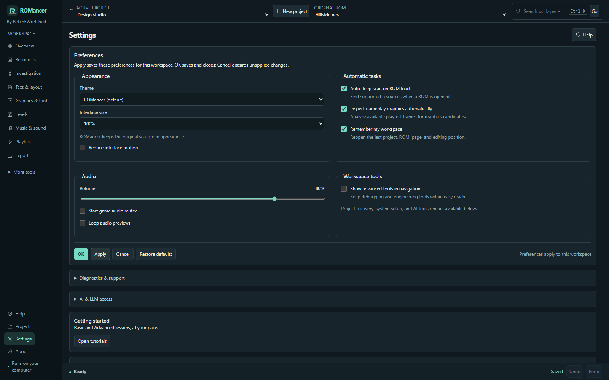

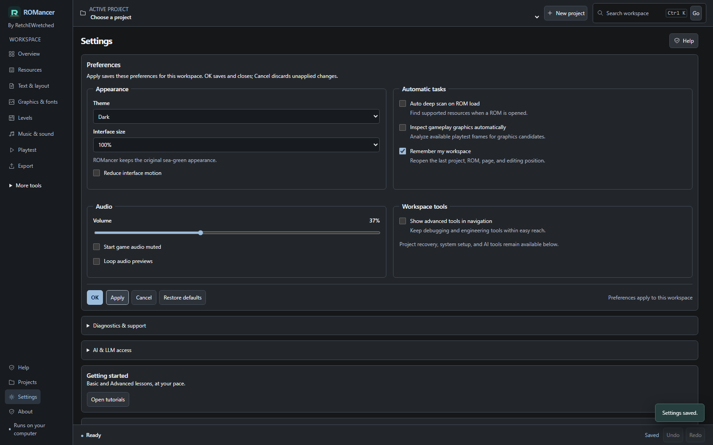
When to change automatic work
Leave Auto deep scan on ROM load enabled for normal discovery. Turn it off when you want to choose the timing of a manual scan. Automatic analysis of paused gameplay graphics depends on an actual loaded session and exposed data; it does not identify arbitrary resource ownership.
Audio and motion
Volume and start-muted preferences control playback defaults; use the current preview controls when listening. Preview looping repeats the available preview, not the game sequence. Reduced motion makes interface motion less distracting.
Apply, Cancel and defaults
Apply saves the currently selected preferences without closing Settings. Cancel does not roll back an earlier Apply. Restore defaults prepares the standard choices for review; use Apply or OK to keep them.
BASIC / Support / checked scope
Understand test results and report a problem
A passing automated check describes the exact scenario it ran. It does not mean every ROM, edit or computer configuration is certified.
Do this
- Read VERIFICATION STATUS in README.txt for the released build results, skips and unperformed manual checks. A skipped test is not a pass.
- If a file cannot import, read the exact error. An HTML page saved as .7z is not an archive; obtain your real cartridge file and extract a valid archive before importing. Never rename an error page to .sms.
- Open Settings, expand Diagnostics & support, run checks and prepare a support report. Review it before sharing; exclude ROMs, saves, states, private backups, credentials and personal paths.
- For a bug report, record version/build, operating system, scale setting, exact steps, expected result and actual result. Prefer reproducing with an included workshop.
- Use the GitHub bug form once the repository is published. Security problems should use its private vulnerability-reporting channel after that channel is enabled; do not post secrets publicly.
Keep in mind. Automated accessibility/contrast checks and keyboard navigation help find problems. They do not replace a human screen-reader trial, an independent beginner trial or testing Windows-wide display scaling on a clean machine.
Known formats and reviewed engines
Import accepts recognized supported cartridge layouts. Unknown, ambiguous or unsupported layouts are blocked. The full Windows runtime checks emulator binaries against the included open-source pins before native loading. A known console header does not identify every game resource; unavailable level, sound or compression interpretations cannot be treated as editable definitions.
Useful byte explanations
After opening a known or declared graphics resource, use Resources -> Explain selected bytes. The report identifies the stored tile/cell, row and bitplane or packed-pixel ordering, and declared palette channel values. It does not invent an enemy name or behavior for undeclared bytes.
BASIC / YOUR FIRST FIVE MINUTES
Start with a project
A project keeps one piece of work together: imported sources, definitions, drafts, builds and measured checks. Begin with a small, reversible edit.
Do this
- Click New project. Give this piece of work a useful name, then import your ROM into that project.
- Check the selected source at the top. On Overview, use Choose a task to open an editor or Investigation. Expand What is known about this source to check the available evidence.
- Make one small edit, review it, create a separate build, then playtest that build. Export its patch after checking the result.
Keep in mind. The Windows x64 distribution includes its runtime and emulator engines. Supply your own ROMs. GB and GBC use separate system modes.
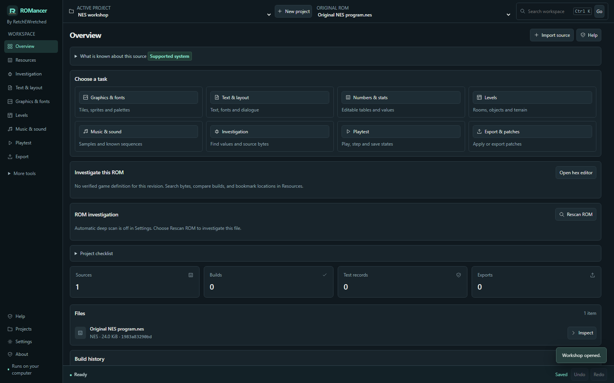
Choose the tool for your task
Choose a task opens graphics, text, numbers, levels, sound, investigation, playtesting or patch tools. Numbers & stats opens Data tables. Editors need an understood or declared layout; use Investigation when byte locations or meanings are unknown.
Find help without reading every page
Use Find help in the offline HTML guide to search tasks, tool names, glossary definitions and index aliases. Results link directly to a topic. The PDF retains its linked contents, glossary, index and ordinary Find command. A system match does not promise a decoded game-specific level or music format.
BASIC / Task shortcuts / offline search
Find a tool or an answer
Use the task you want to perform as a starting point. Keep this guide open beside the editor when a term is unfamiliar.
Do this
- On Overview, open Choose a task. Graphics & fonts covers sprites and palettes; Numbers & stats opens Data tables. Investigation helps locate unknown values.
- Open Help > User guide. Choose Search guide, enter a short term such as palette or save states, then open a matching topic.
- Add another word to narrow results. Search matches all entered words and includes glossary definitions and index aliases. Clear empties the results.
- Follow a topic’s related links or glossary terms. For an exact phrase, use the browser or PDF reader Find command.
Keep in mind. Topic search runs locally in the HTML guide, with no network or account. Without JavaScript, use the contents, glossary, index or ordinary Find. Search does not inspect your ROM.

If an editor asks for a definition
A console header identifies hardware, not arbitrary game data. Use a verified definition, declare a format you understand, or investigate bytes and runtime observations. Candidate matches are evidence to review, not confirmed game semantics.
BASIC / Short offline video / original NES workshop
Watch the first-edit walkthrough
Watch an actual local application recording, then try the same steps yourself. The video has instructional captions and a highlighted pointer, with no commercial game content.
Do this
- Open the HTML guide chapter Watch the first-edit walkthrough and use the video controls. The adjacent ROMancer-v1.0-Walkthrough.mp4 also opens in an ordinary local video player.
- Follow the original NES workshop: assemble a tile, select brush swatch 1, paint one pixel, compare Changes only with Side by side, then undo and redo the stroke.
- Review graphics changes and optionally name the build. Choose Playtest build, Load game, Play and Pause. Save and load a state for that exact output.
- Export and download the readable First-sprite-edit.bps patch. Close and reopen the project, then check that its source and named build remain available.
- Make one more staged edit, wait for Saved, reload, and confirm its draft returns. Use the beginner acceptance checklist for your own independent trial.
Keep in mind. The drawing program intentionally repeats the edited tile. This is an automated demonstration, not evidence that a beginner has passed the independent usability trial. The PDF cannot play video; open the MP4 or the HTML edition.
Video chapter times
00:00 01 · Start with a workshop
00:10 02 · Assemble a sprite
00:24 03 · Make one small change
00:36 04 · Undo and redo
00:48 05 · Review and create a build
01:06 06 · Select and load your build
01:18 07 · Play and pause
01:30 08 · Save and load a state
01:48 09 · Export a verified patch
02:10 10 · Reopen the project
02:26 11 · Recover a saved draft
02:44 12 · Try it yourself
BASIC / Open / edit / build / test / export
Your first complete edit: the original NES workshop
Use the included original drawing program to learn the full workflow without finding offsets or supplying a commercial game.
Do this
- If the optional tutorial prompt appears, choose Not now for this exercise. Save existing work; choose the blank Choose a project entry if needed. On the empty Overview, click NES workshop.
- Open Graphics & fonts. Keep First tile 0, Tiles across 1 and Tiles down 1; click Assemble tiles. Leave Preview size on Fit and click brush swatch 1.
- Focus the Editing canvas. Press Right Arrow once, then Space. Expect 1 pixel differs; the Original picture stays unchanged. Undo sprite stroke reverses the experiment.
- Click Review graphics changes, read the byte summary, then Create graphics build. Name and notes are optional. Click Playtest build in the bottom bar to select that output and open Playtest.
- Choose Load game, then Play. Pause to inspect the result. The full Windows edition supplies the engine; the source edition may require core setup.
- Open Export. Choose the original revision and your asset build, then Create verified patch. Download the prepared BPS. Continue with Apply a downloaded patch to check a fresh reconstruction.
Keep in mind. Those byte values belong only to this original workshop. Its drawing program reuses the tile, so one edited pixel can repeat in gameplay. A saved draft or preview is not a built ROM.
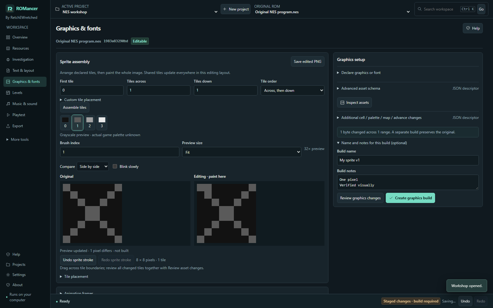
BASIC / Everyday editing / small controls that matter
Use search, swatches and comparison views
Find the right tool, select a visible brush color, compare an edit and give the output a useful name. The same byte checks still protect the original.
Do this
- Search the workspace for palette, sprite, hex or save state. Choose a tool result. Click a matching file to select its exact revision and inspect it in Resources.
- In Sprite assembly, choose a brush swatch. Labels distinguish declared colors, observed gameplay colors and grayscale placeholders. An unknown game palette is not silently guessed.
- Use Compare: Side by side, Original, Edited or Changes only. Difference and blink views are read-only. Slow blink is optional and follows app and operating-system reduced-motion settings.
- Review the planned changes. Read the measured byte summary; open the full report for offsets and technical detail. Name and notes for this build are optional.
- Create the build and playtest that output. On Export, choose Create verified patch. Human-readable filenames follow your release title; Download started points you to the browser’s save workflow.
Keep in mind. Comparison controls change only the view. Save edited PNG exports the whole edited sprite. Use Side by side or Edited to paint again. A saved draft still needs a reviewed build.

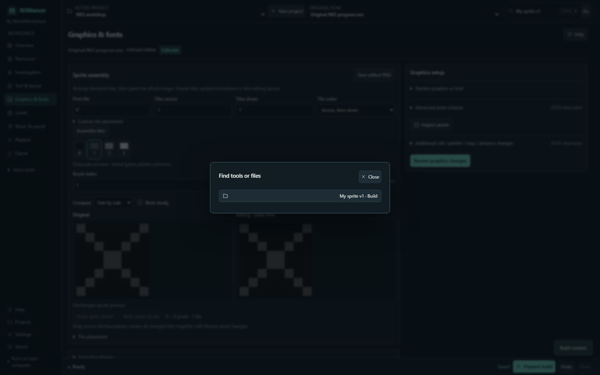
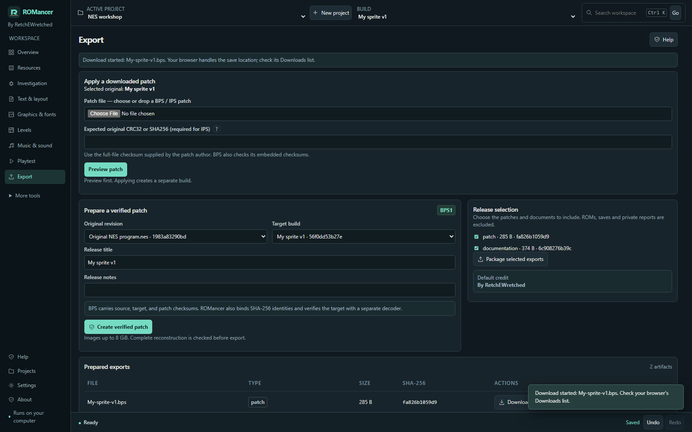
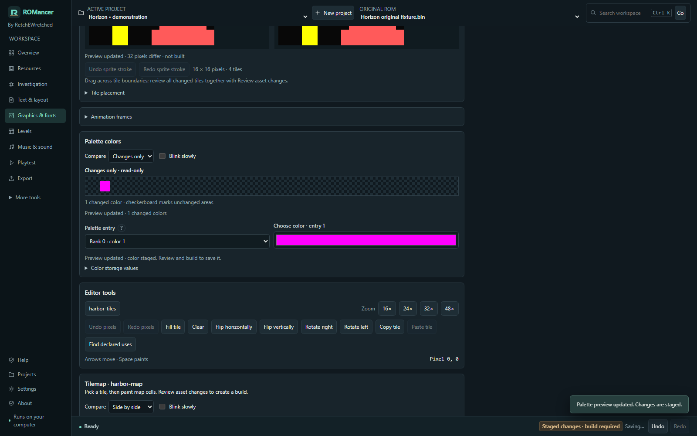
What a difference picture measures
Changes only compares clean decoded pixels or palette colors. Cursors, selection outlines and editor highlights are excluded. A terrain comparison does not measure object records or collision values; its scope note identifies those separate overlays. Unsupported or oversized previews keep their existing view.
What a review summary counts
Counts come from exact before/after bytes, with overlapping ranges merged. Listed checksum/header updates are included. Large or unfamiliar reports retain their technical detail instead of an invented count. No game-specific meaning is inferred from a changed byte.
BASIC / Independent hands-on usability trial
Complete the beginner acceptance checklist
Check that you can finish a small edit comfortably, without outside assistance. Copy the unmarked checklist from README.txt into your own notes, or print it. Leave installed program files unchanged.
Do this
- Open the app and original NES workshop. Find Graphics & fonts, assemble one tile and make one visible pixel change. Confirm that the fixed Original preview stays unchanged.
- Undo and redo the stroke, review the change, and create a build. Identify the selected file as Original or Build before loading it in Playtest.
- Play and pause the build. Save and load a matching state, then export and download a verified BPS patch. Identify the original, build and patch as separate files.
- Close and reopen the project, then find the same source and build. On the original, stage one more edit, wait for Saved and reload. If a confirmation appears, continue only after saving. Confirm the draft and its staged-change status return.
- Read the labels and previews at your preferred window size and theme. Mark a box in your checklist copy complete only when you can explain the result without outside help. Skipped or confusing steps stay unchecked.
Keep in mind. A saved editing draft still needs a new reviewed build before it affects gameplay. Automated checks and the walkthrough video are separate evidence; they do not fill in the human-trial boxes.
What counts as a usability issue
Needing someone to find a button, confusing a draft with a build, losing track of the selected file, unreadable labels or an unclear recovery prompt all count, even if the underlying operation eventually succeeds.
Record a useful report
Describe what you clicked and what you expected. Attach a screenshot or a sanitized support report if useful. Keep ROM data, private paths and personal saves out of a public report.
BASIC / Hashes, scope and evidence
Identify the ROM and its exact revision
A system header, an exact hash match and a successful playtest answer different questions. Read each result before selecting a named game edit.
Do this
- Select the imported source and open Resources. Read ROM health & revision and the investigation summary. A filename is a hint, not a verified identity.
- For a known reference, use Identify ROM revision. Import your offline CSV, TSV, JSON or XML DAT catalog and select whole-file or supported cartridge-payload scope.
- Compare CRC32, SHA-1 or SHA-256 with an expected value for that same scope. Check the region, revision and any copier/header prefix. A mismatch is against the selected reference.
- Use Check project on Overview for missing files, stale definitions, overlaps and declared pointer/allocation problems. Recheck after repairing the reported location.
Keep in mind. A valid console checksum does not prove every game-specific check passes. Hashes do not prove that an edit is fun, balanced or safe in every scene.

Three separate checks
Identity: compare measured bytes with an expected revision. Structure: validate supported headers, declared sizes and integrity fields. Behavior: playtest and replay explicit assertions. Keep these conclusions separate.
Headers and byte scope
A SNES copier prefix or an NES trainer/header can change file positions and whole-file hashes. Compare a payload reference only with the matching supported payload scope. Never force a named definition onto a close-looking revision.
BASIC / The editing cycle
Save drafts, undo and create a build
Editing changes the proposal shown in the editor. A build is a separate playable output created from a reviewed plan.
Do this
- Watch the Saving or Saved status as you work. Ctrl+S requests draft saving. A saved draft still needs review and a build.
- Use the active editor's Undo and Redo controls. Pixel and room editors group a stroke; text fields retain ordinary text editing undo. The shortcut help explains the current context.
- Choose Review changes or the tool's equivalent. Read expected original bytes, proposed values, shared consumers and any integrity updates. Changing an input invalidates an older review.
- Create the separate build, then click Playtest build in the bottom bar. It selects that output and opens Playtest; choose Load game. Older outputs remain in the top selector and Build history.
Keep in mind. If saving fails, keep the window open and copy unsaved text before reloading. Undoing staged work does not erase a previously created build.
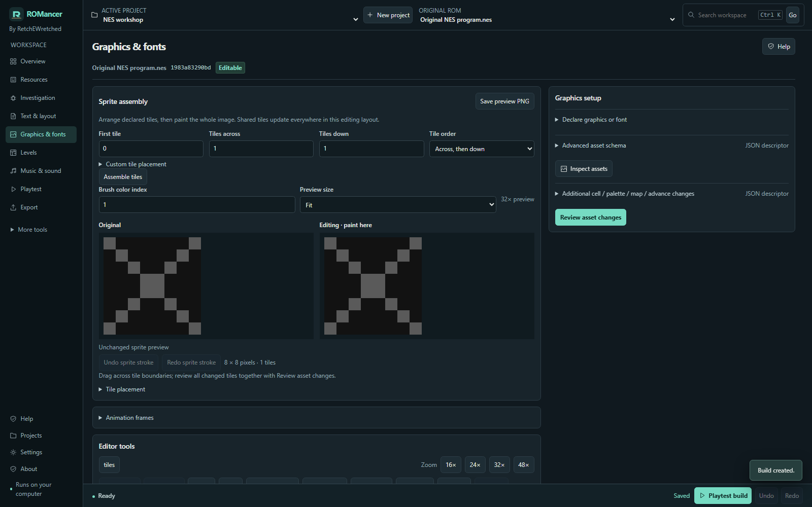
Draft versus plan
Drafts hold editor values and staged changes. A plan binds exact changes and preconditions to a source identity. Re-review when the source, definition or staged values change.
Returning to earlier work
Playtest build appears for an output created in this session from the selected input. Newer staged edits still need another build. Overview > Build history keeps all recorded versions. Give outputs meaningful names and keep private project backups.
Name the output before creating it
Open Name and notes for this build (optional), enter up to 120 name characters and 2000 note characters, then create the reviewed build. Notes can span lines. Names and notes are metadata; they do not alter the output bytes. Existing builds remain editable through Build history.
BASIC / SNES / CHRONO TRIGGER
Make a small balance change
Use a named, revision-matched edit for a focused first balance change. Compare the stored value with the actual in-game result.
Do this
- On Overview, look for Game edits and Revision matched. These named edits require the exact verified original.
- Change Wood Sword power from 3 to 30. Read the original/edited comparison and click Review changes.
- Expand Byte changes and console checksum if you want the exact edit list. Choose Create build, then test the weapon in game.
Keep in mind. Stored power is not the final damage or displayed attack. Game formulas can change that result. A revision match verifies the source, not every possible gameplay effect.

BASIC / Resource browser / user research
Keep discoveries with the exact ROM
A useful discovery should be easy to find again. Research notes name a byte range and record what you observed without turning a theory into a verified game format.
Do this
- Open Resources and use Resource browser & research to search saved graphics, text, numbers, levels, sound or notes. Bytes opens the exact range; Editor opens the saved layout.
- Expand Research note. Choose New note at selected byte, enter a short name, file offset and byte length, then record what you found and its evidence reference.
- Choose Save note. The note belongs to this exact source revision and does not change the ROM. Select Edit note to load its complete text, or Remove to delete it after confirmation.
- In the hex editor, choose Explain selected bytes. Matching notes appear under User research, separately from decoded storage facts.
- If opening an editor would replace a different setup draft, choose Keep current draft or Load saved setup. Loading first stores a recovery copy; Resources > Previous editor setups can restore it. Document-specific pixel and text edits remain separate.
Keep in mind. A note is user-authored research, not automatic game knowledge or edit permission. Browser lists use short summaries; Edit note loads the complete record. Up to 256 notes are stored per source.

BASIC / GENESIS / THE IMMORTAL
Change text without overrunning it
Change a short, documented string while keeping its storage and required controls intact. Test its appearance with the real game font.
Do this
- On the matched source, edit New-game menu text. This example changes "New game?" to "New hack?".
- Read the text comparison and length limit. Click Review changes and inspect every additional change listed in the plan.
- Create the build and playtest the actual menu. Use Text & layout for declared script records and translation imports.
Keep in mind. The preview uses the system font. The real game font and window still need playtesting. This named definition preserves its protected terminator; do not copy its offsets to another revision.

BASIC / GBA / WARIO LAND 4
Compare palette colors before building
Compare decoded original colors and proposed colors before writing a build. This example is tied to an exact file-select palette definition.
Do this
- Open the matched source and change File-select colors to Teal and magenta.
- Compare Original and Edited swatches. Expand the second file-select palette to inspect that set too.
- Review the change, create a build and open the file-select scene in Playtest to check the appearance.
Keep in mind. These swatches decode stored RGB555 colors. They are not a screenshot of the game scene. Palette changes can affect every object using those entries.

BASIC / GAME BOY / FINAL FANTASY LEGEND II
Move a documented room object
This is an actual ROM-decoded bedroom on a matched commercial-game revision. Change only the documented stool command, then check its appearance and surrounding movement in native Playtest.
Do this
- On the matched source, open Opening-bedroom stool on Overview or open its matched room in Levels. Compare the actual ROM-decoded original and edited terrain.
- In Layers, toggle Terrain, Objects, Collision values, Tile grid and Allowed floor tiles. Keep Objects visible to edit the stool.
- Drag the stool onto a highlighted floor tile, click an allowed tile or use arrow keys while the map has focus. The stool-position dropdown is an alternative. The status reminds you to create a build to keep the previewed change.
- Review the source-bound command, create a separate build and visit the bedroom. Check the stool, surrounding movement and protected doorway in Playtest.
Keep in mind. The doorway at (13, 33) and other room commands are protected. Preview details contains technical bounds and raw collision information. Actors and dialogue are excluded from this terrain preview. Hiding Objects prevents stool edits.

BASIC / GAME BOY COLOR / DEJA VU CASEBOOKS
Edit a Game Boy Color palette
Use the Color system mode for a GBC source, then test both the startup interface and the first scene covered by this definition.
Do this
- Select the matched .gbc source. Choose Parchment colors under Opening casebook interface.
- Compare the startup interface swatches. Expand Opening scene interface colors to inspect the second palette.
- Review and build, then playtest with the Game Boy Color system selected. Check the opening casebook and first scene.
Keep in mind. This definition covers the startup interface and first Case Book 1 scene. Later rooms may use separate palettes. GBC mode matters even though GB and GBC share an engine.

BASIC / TEST THE SELECTED BUILD
Playtest, pause and save a state
Load the exact source or build you intend to test. Playback, controller input, frame stepping and snapshots operate on that loaded session.
Do this
- Check that the top selector shows the source or build you intend to test, then open Playtest and click Load game.
- Choose Play and focus the game for controller input. Use Pause before inspecting a frame. Controller & frame tools exposes manual stepping and input devices.
- Choose Save state. Select a saved state and click Load state to return to it. Ordinary battery saves are managed separately below.
Keep in mind. Save states are bound to the exact ROM, engine and runtime setup. Do not assume a state from the original will load on a modified build. Loading refreshes one paused frame.
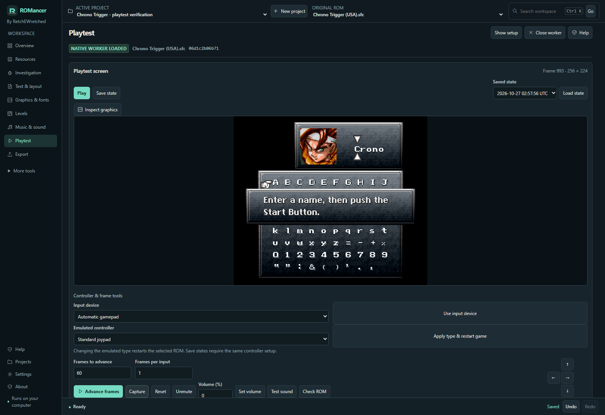
BASIC / Protect progress
Keep battery saves and states separate
A battery save is persistent game data such as raw .sav or .srm RAM. A save state captures an emulator session and has much tighter compatibility requirements.
Do this
- For a snapshot, use Save state beside Play. Select the timestamped state for the same ROM, core and setup, then use Load state. Loading refreshes one paused frame.
- For ordinary progress, load the exact game and open Battery saves. Back up the currently exposed save RAM before importing or restarting.
- Import raw save data only at the exact supported size. Keep a downloaded backup. Use the game's own load/save menu to confirm progress after a restart.
- Use Restart with selected save only after reviewing the chosen file and automatic backup. Keep separate progress for experiments until the edited build is validated.
Keep in mind. A state from an original can be incompatible with a modified build. Wrapped emulator saves are not automatically raw RAM; use the originating emulator's export tools.
Binding matters
States depend on exact ROM bytes, engine build, options and system-file setup. Do not treat a matching game title as compatibility. Battery files can also depend on the game revision and save layout.
Size or initialization mismatch
Some games expose a different save size after initialization. A refusal preserves the backup; do not pad, truncate or bypass exact-size checks without a separately understood format.
BASIC / SHARE YOUR CHANGES
Export a verified patch
Share the verified difference between an exact original and a completed build. State the required source revision with your instructions.
Do this
- Open Export. Select the exact Original revision and the intended Target build. Add a useful title and notes.
- Click Create verified patch. ROMancer reconstructs the target with a separate BPS decoder and checks its identity.
- Download the prepared patch. Include the expected original revision and instructions with your release, then test applying that patch to a fresh source copy.
Keep in mind. A patch is not a full ROM. BPS checks compatibility using embedded checksums; IPS needs an external source reference. A verified patch proves reconstruction, not complete gameplay correctness. To apply a downloaded patch, use Export > Apply a downloaded patch on the exact original. BPS carries checksums; IPS requires the author's full-file CRC32 or SHA-256 reference. Preview compatibility before creating its separate build.

BASIC / Exact source / compatibility preview / separate build
Apply a downloaded BPS or IPS patch safely
A patch describes a change to a particular source. A matching game title alone is insufficient.
Do this
- Read the patch author's required region, revision and header treatment. Import your own original into a project and select that original in the top bar; then open Export.
- Under Apply a downloaded patch, choose or drop one BPS or IPS file. For IPS, enter the author's full-file reference: eight hexadecimal CRC32 digits or 64 SHA-256 digits. BPS checks embedded checksums.
- Choose Preview patch. Read the format, target size and changed-byte count. Expand Changed ranges and identities for source/target hashes and offsets. A zero-change result has nothing to build.
- If the reference mismatches, stop and find the required original. Do not remove a header, edit a checksum, or substitute another revision merely to bypass the failure.
- Give the output a useful name and choose Create patched build. ROMancer selects the separate output and opens Playtest. Load the game, verify the intended change, and preserve the original.
Keep in mind. Changing the selected file can restore its previous editor. Select the original first, then open Export. A valid patch reconstruction establishes bytes, not whole-game behavior. Chain patches only when the next patch explicitly requires the previous output. Patch size includes metadata; sparse runs and dense edits can encode differently. Export does not promise the smallest possible patch.

BASIC / Projects, Trash and private backups
Back up, restore and recover a project
A project backup is for your own recovery or migration. A public patch package has a different purpose and contains a different selection of data.
Do this
- Open Projects to choose the right project before editing. Use a separate project for unrelated games or experiments you want to manage independently.
- In Settings, make a complete private project backup before moving a workspace or making broad changes. Store the archive outside the working project and confirm it was created.
- Restore into the destination workspace, open the recovered project and run Check project. Inspect sources, builds, definitions, drafts and prepared exports.
- To remove an unwanted project from the active list, choose Delete project, then Move to Trash. Recover it through Projects > Trash > Restore.
Keep in mind. A private backup can contain your ROMs, saves and personal work. Review what you share. Recovery does not make historical reports into fresh native evidence.
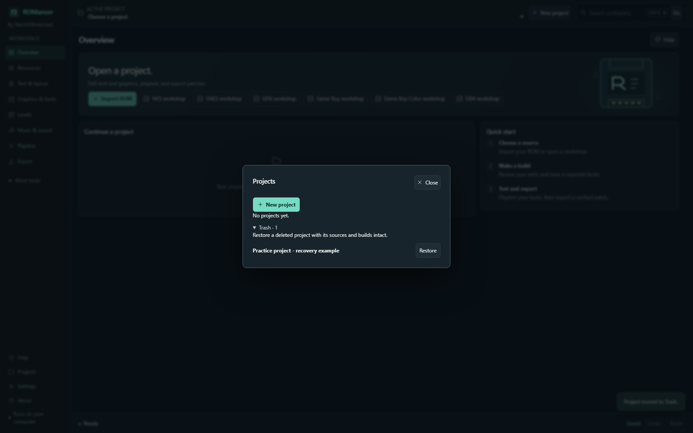
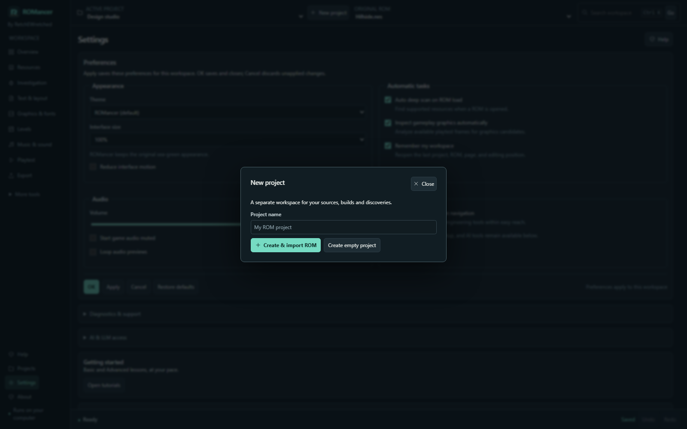
Before cleanup
Check the project name and current workspace. Keep an independent backup before deleting old application folders or moving manually managed data. A reversible application rollback is not a project backup.
After restore
Run fresh native checks before using restored captures or reports as current proof. If a lock blocks recovery, establish that the previous owner process is no longer running; never break an active writer's lock.
BASIC / HELP / BASIC AND ADVANCED
Learn a little at a time
Learn one tool at a time, or jump to an exact term. Tutorials, keyboard shortcuts, this glossary and the index remain available offline.
Do this
- Open Help > Tutorials whenever you want a guided lesson. The first-launch invitation is optional and includes Never ask again.
- Choose a short Basic or Advanced lesson. Completed lessons receive a green check; skipped lessons do not.
- Use Help > Keyboard shortcuts for the popup. Ctrl+S saves drafts; contextual Undo/Redo acts on the active editor. Text fields retain normal text undo.
Keep in mind. Saved drafts are not playable builds. Before leaving an edit session, review the Saved or Saving status and whether staged changes still require a build.
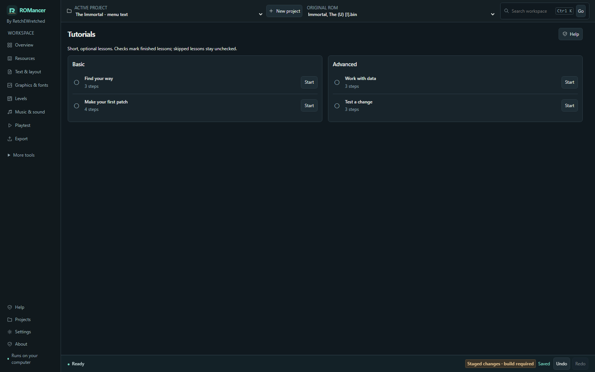
BASIC / ORIGINAL / MODIFIED FILES
Load a mod and compare the changed bytes
Compare two files in the same project. A patch can create a separate modified build, while a supplied modded ROM can be imported as another source.
Do this
- Import your original ROM into a project. For a modded ROM file, use Import source in that same project. For BPS/IPS, select the original and open Export > Apply a downloaded patch. IPS requires the author’s original CRC32 or SHA-256 reference.
- Choose Preview patch, inspect the changed-byte count and source identity, then Create patched build. The original remains unchanged. A successful BPS reconstruction does not establish each changed byte’s gameplay meaning.
- Open Overview > Build history > Compare files. Choose the original/earlier file and the modified/later file, then click Compare files. Read the full changed-byte count and select a listed changed range.
- In Resources, compare Earlier bytes and Selected bytes. Highlights mark differences. A dash means that file has no byte at that offset. Use the comparison page controls for added/removed regions, or Follow hex editor to use its current position.
Keep in mind. A shifted or recompressed resource can change many bytes without creating many separate gameplay changes. The range list can be truncated; its changed-byte total still covers the complete comparison. File-relative differences do not prove that offsets mean the same thing after relocation.

BASIC / Investigate / record / narrow
Investigate a changing value without a game profile
ROMancer can gather evidence from an unfamiliar ROM. Start with one number or a controlled change rather than guessing a game property from byte values.
Do this
- Load and pause the selected ROM in Playtest, then open Investigation. Name the experiment and enter the visible number, or leave it blank for change-only tests.
- Choose Capture before. Perform one controlled action, pause and capture again. Record whether the target increased, decreased, changed, or changed by an exact amount.
- Add an unchanged control while unrelated activity continues. This helps reject background counters. Keep before, changed and control observations together.
- Compare surviving RAM offsets, widths, byte order, signed/BCD encoding and display relationships. Additional observations help separate equally fitting hypotheses.
- Use Add watch to retain a range or Investigate accesses for a native physical watch. Continue with the native capture chapter.
Keep in mind. Each observation covers at most 4096 bytes; an experiment keeps at most 32 observations. A new worker, reset or loaded state requires a fresh series. Restored project evidence remains historical and cannot supply fresh native proof.
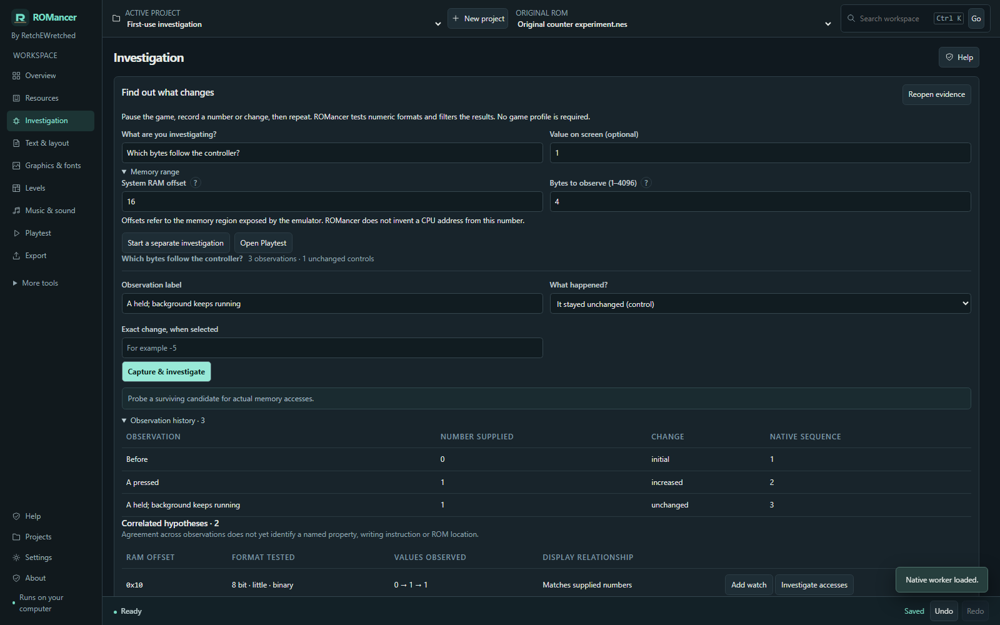
BASIC / Find a table / edit a named record
Rebalance named Pokemon stats and moves
For the supported GBA numeric layout, ROMancer finds the first 151 species and first 165 moves without manual offsets. The opening records and every displayed record prefix are checked.
Do this
- Import your own GBA file. Automatic deep scan includes documented-table discovery. Open discovered tables from ROM investigation, or use Data tables > Find stat and move tables.
- Read the result. Exact original identifies the checked Emerald revision. Pattern match means a modified ROM has matching numeric storage, not that every name or behavior is proven.
- Choose Open named table. Search for Bulbasaur or a move such as Pound. Save this layout to keep its names with the source. Only the listed prefix fields are editable; omitted record bytes stay untouched.
- Change one value. The cell shows original, edited, difference and percentage. Choose Review changes, check the byte plan, then Create build. Use separate builds for larger experiments.
- Playtest the build and export a verified BPS patch. Returning to the original preserves its original values. A changed base stat is not necessarily the current party member’s displayed stat.
Keep in mind. The tests establish the numeric edits, patch reconstruction, emulator loading and state round trips. They do not certify battle balance or a complete playthrough. Discovery covers the stated first 151/165 layout; expanded species, custom move scripts and relocated formats can need further readers.
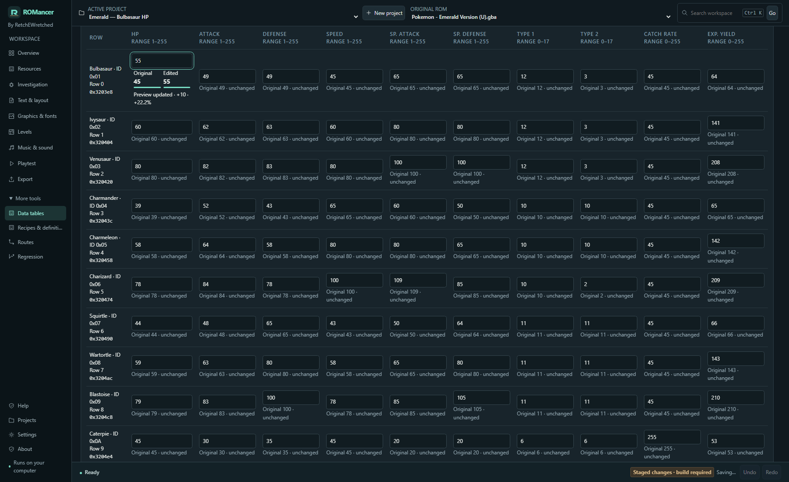
BASIC / Game view / resources and editors
Follow connected game resources
Game view connects saved graphics, palettes, text, named records, rooms, objects, sound, research notes and measured gameplay. It works across NES, SNES, Genesis, Master System, GB, GBC and GBA; it does not require a Pokemon profile.
Do this
- Choose a source or build in the top bar, then open Game view. Find a resource by name or use Show to focus on graphics, rooms, named records or gameplay traces.
- Select an entry. Read its preview, decoded fields or text and its exact byte range. The confidence label distinguishes a checked layout, a known revision, your note and a measured frame.
- Follow a connection to inspect related storage. Uses tiles and Uses palette come from a saved declaration. Shares byte storage only means overlapping file ranges; it does not establish a game behavior.
- Choose Open editor to continue in the existing editor, or Inspect exact bytes to inspect its file location. Keep current draft preserves work when another setup is offered.
- Rooms show the declared map and object outlines. Named records show decoded fields. A missing preview or connection means that format or relationship still needs a checked declaration or measured evidence.
Keep in mind. An index of checked data is not a universal decompiler. Game-specific maps, music and scripts still need supported readers. A source change invalidates stale declarations and evidence.
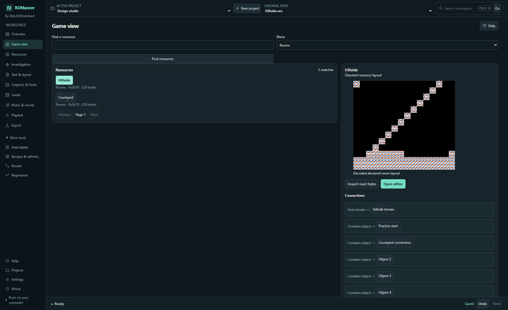
BASIC / Playtest / select / trace / inspect
Trace a captured object to candidate ROM graphics
Save a real native frame region and search the selected ROM using its tested literal tile codec. Traces retain the frame, crop, searched range and every returned pixel candidate.
Do this
- Load the selected game in Playtest. Play or advance to the scene, pause, and choose Inspect graphics. Capture a fresh frame if needed.
- In Frame region & screenshot checkpoints, drag a tight rectangle around the object, at least 8 by 8 and at most 256 by 256 pixels. Smaller regions reduce competing matches.
- Under Trace gameplay to ROM data, name the trace and choose its source search range. Choose Trace selected object. Each request searches at most 512 KiB; read the reported coverage.
- Review matching parts and competing source offsets. Choose Open saved trace in Game view to revisit the crop and its candidates. Search next ROM range continues an incomplete search.
- Choose a confirmed candidate or explicitly select matching parts to open the graphics editor. Review the assembled result before editing, build separately, then playtest the changed scene.
Keep in mind. Pixel agreement does not prove a CPU/VDP source transfer, animation ownership or the role of a sprite. Compressed, transformed or RAM-generated images can have no literal match. The supplied seven-game test includes genuine zero-match and partial results; it does not claim every sprite was found. Use Verify ROM sources to test causal origins with coded probes and independent validation.
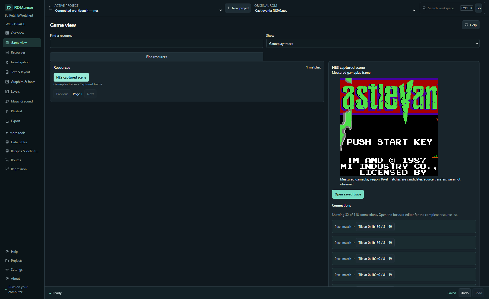
BASIC / Game view / Build checks
Check each build automatically
Compare a separate build with two fresh runs of its original using identical inputs and a reviewed emulator core. A saved test can run after each descendant build or imported patch.
Do this
- In Game view open Automatic check setup. Give the check a name, choose the frame count and select whether visual changes need review or identical pixels are required.
- Leave Run after new builds selected to queue this check automatically. Save test setup for this revision. For button sequences or a fixed comparison region, expand Advanced inputs and comparison region.
- Create a build normally, or choose an existing Build to check and Run checks. The application shows progress and lets you cancel the job. It remains usable while separate workers run.
- Open a recent result. Compare Original, Build and Difference. Read cartridge integrity, state replay and worker closure results alongside the visual result.
- PASS means the configured checks passed. REVIEW means the image changed under the review policy. REGRESSION means an explicit assertion or integrity check failed. INCONCLUSIVE means the baseline was unstable, flat or otherwise unsuitable. BLOCKED explains why execution could not complete.
Keep in mind. Passing an opening-scene comparison does not establish that a later edited sprite, battle or room works. Add routes and screenshot assertions that reach the changed behavior; conduct the relevant hands-on playtest.
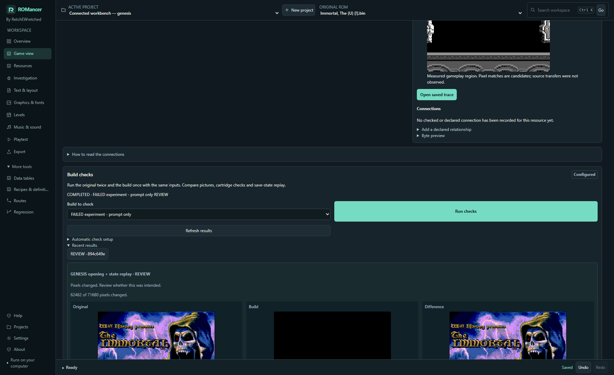
BASIC / Verified graphic sources / step by step
Find the ROM bytes behind a graphic
Go beyond matching pixels. ROMancer can recover source pixel origins with controlled builds, then test the recovered map independently. This workflow uses the tested literal tile formats across all seven supported systems.
Do this
- Cold-start the game and reach the scene. Pause, capture a frame and save a tight sprite or tile trace. ROMancer records acknowledged inputs automatically.
- In the saved trace choose Verify ROM sources. ROMancer replays the original twice, then runs coded probes and two independent validation patterns in temporary builds. Progress and Cancel job appear below.
- Read the result. Verified visual source includes an exact file offset, a recovered pixel map and original/controlled-marker/difference pictures. Green mask pixels are verified; unresolved pixels stay red. A partial map does not certify the whole sprite.
- Choose Open verified part in graphics editor. Its original source pixels and observed colors are shown. Make a small change, review it and create a separate build. Undo restores the editing stroke; the original ROM stays unchanged.
- Saved source-test results retain earlier successful and unsuccessful pages. In Game view use Verified sources or Source checks to find the evidence again. Test next source locations continues a bounded search.
Keep in mind. Offsets apply only to the tested revision and scene. This measures source-to-picture dependency, not CPU, mapper-bank or DMA transfers.
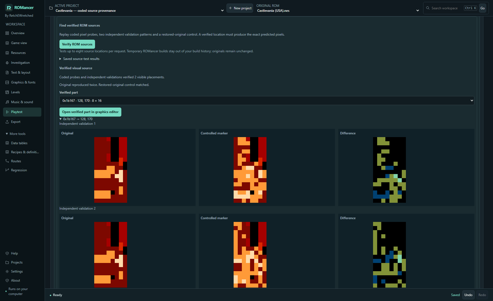
ADVANCED
Advanced workflows
Use explicit definitions for graphics, text, tables, connected-room layouts, audio and bounded automation. Follow declared ranges to exact bytes, and keep editor metadata, native observations and unknown game semantics separate.
ADVANCED / RESOURCES / HEX EDITOR
Inspect bytes with useful context
Inspect exact stored bytes with a known purpose and an explicit address scope. Use higher-level tools when their definitions describe the change.
Do this
- Use a Known locations > View 0x... button to jump to a documented offset, or open Resources and enter an offset.
- Search bytes such as AB ?? CD, UTF-8 text or an integer with explicit byte order. Inspect signed/unsigned numbers, read nearby verified notes and bookmark the selected offset before editing.
- Edit a byte using two hex digits. Choose Review byte edits, inspect the plan, then Create separate build.
Keep in mind. Hexadecimal is a way to write numbers; it does not tell you what a byte means. Unknown data stays unknown until evidence establishes its structure and purpose.
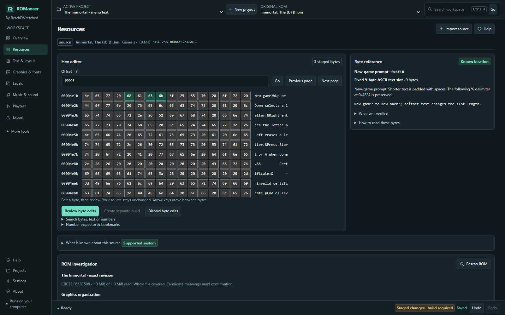
ADVANCED / Resources / catalog, relationships and explanations
Trace a declared range to the exact bytes
Follow a named room, object field, table or sound range into the selected source. Explanations describe established encodings and declared relationships, while unknown byte purposes remain unknown.
Do this
- In Resources, open Declared resource catalog, choose Index declared resources and search a name. Checked definitions can expose rooms, object slots, table ranges, samples and songs. Use Inspect on the intended range.
- Select a byte in the hex editor. Open Number inspector & bookmarks, then Explain selected bytes. Read its source-bound name, offset, stored bytes, numeric value, byte order and declared bounds when available.
- For room data, compare the cell X/Y or object slot and field. For a mapped exit field, read the declared destination. Use Declared resource relationships to follow named source ranges; these relationships do not establish arbitrary code references.
- In Troubleshooting, use Find declared references or Resolve address, then Inspect mapped bytes. Confirm the current source, mapping and bank. Recompute after switching sources; do not reuse a stale result.
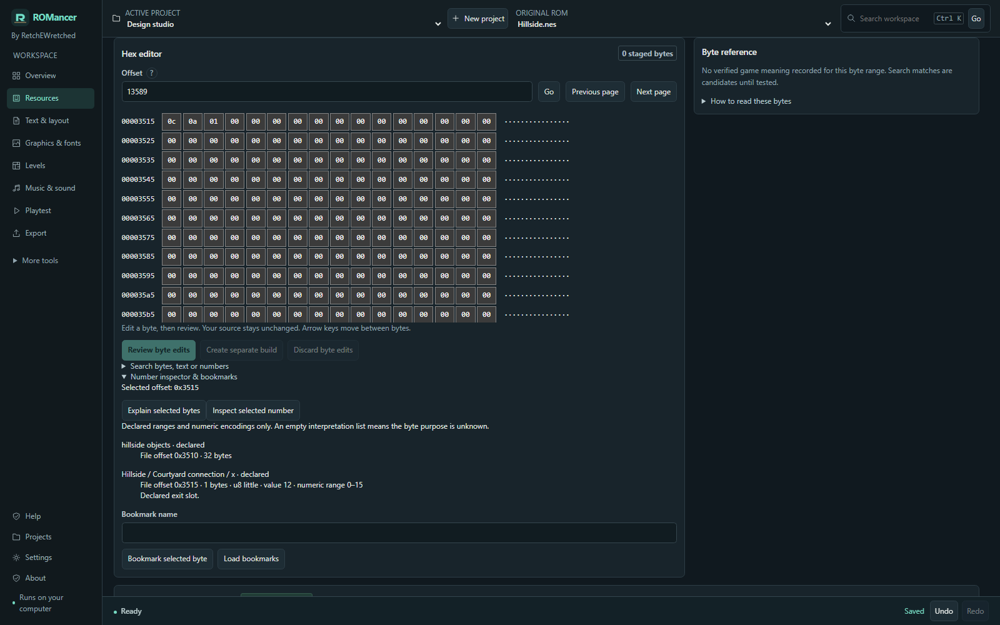
Read the stored value
This capture selects 0x3515 and explains the Hillside / Courtyard connection / x field as an 8-bit declared value of 12, bounded from 0 to 15. The separate byte-reference panel correctly does not claim verified game semantics.
Drafts and source bytes differ
An inspector can show a staged X position of 13 while the selected original source still stores 12. Create and select the separate build before expecting a byte explanation to describe that built edit.
Keep navigation current
Go selects the visible byte cursor. After moving or switching sources, request the explanation again. A previous number interpretation or reference result does not describe a newly selected byte automatically.
What a declaration can explain
A terrain/collision cell can identify its room and coordinates; an object field can identify the named slot, value and declared target. Metatile parts, table fields, samples and supported song events retain their own range and format context.
Use the matching kind of tool
A source editor changes checked stored data. A game-authoring engine needs its own executable runtime and event system. Instruction breakpoints require a real CPU-debugging adapter. The current investigation tools provide byte comparisons and bounded observations, not a full instruction debugger.
Protect the selected context
Reference jumps, mapped-address inspection and memory watches belong to a source/runtime context. Re-selecting a file, build or session requires a fresh compatible observation. A changed RAM value alone does not identify a ROM address or the instruction that wrote it.
ADVANCED / Known, declared and candidate
Discover resources and declare a format
Offline investigation can identify known revisions and suggest possible structures. A candidate is a lead to inspect, not permission to edit arbitrary bytes.
Do this
- Read the automatic investigation after import. Keep exact known identities separate from candidate text, graphics, pointer or compression matches.
- Use Rescan ROM for changed data or Find resources for a focused byte range. Read any partial-range report and continue the next range when needed.
- Confirm the offset, format, dimensions, allocation and source identity before declaring a resource. Inspect surrounding bytes and independent references for the exact revision.
- Save the checked definition. Reopen it on the same source and compare the preview with a measured game scene before applying edits.
Keep in mind. A plausible picture or readable word can occur inside code or unrelated data. Automatic discovery cannot establish arbitrary enemy names, animation scripts or sound-driver commands.
System formats
NES stored CHR uses planar 2bpp; Game Boy uses paired row bitplanes. SNES templates support paired 4bpp; Genesis supports packed 4bpp and big-endian palette words. GBA templates include low-nibble-first 4bpp and RGB555. Each game can add compression and its own layout.
Six supported modes
NES, SNES, Genesis, GB, GBC, GBA and Master System are separate user choices. Bank switching, enhancement hardware and game-specific data need their own supported mapping or verified definition. Unrecognized cartridge layouts are rejected on import. Stored resource interpretations still need their supported codec and source-bound definition. The declared catalog also exposes checked level and sound ranges; it does not discover arbitrary room identities or music-driver commands.
Automatic versus manual investigation
Settings enables Auto deep scan on ROM load by default. You can choose a manual scan instead. Automatic paused-gameplay graphics analysis examines available observed data; its candidates still need format and ownership confirmation.
ADVANCED / NES / CASTLEVANIA
Paint an assembled sprite
An explicit assembly places known tiles into a useful sprite view. Painting edits the referenced tiles; the arrangement itself does not discover game logic.
Do this
- Open Graphics & fonts. With verified or declared tiles loaded, use Sprite assembly to arrange the parts.
- Click a brush color swatch, set Preview size to Fit or a fixed zoom, then paint in Editing · paint here. Declared, observed and unknown grayscale colors are labeled. The numeric Brush index remains available.
- Use Undo sprite stroke or Redo sprite stroke, then Review graphics changes and create a build.
Keep in mind. This example uses a declared tile layout and observed gameplay colors. It does not prove automatic sprite assembly for every game. Preview colors do not change palette bytes. Compare changes in the viewing controls. Save edited PNG always exports the complete edited image, not a difference mask.
ADVANCED / Color indices and shared uses
Edit stored palette entries deliberately
A pixel usually stores a color index. A palette supplies the RGB color for that index. Changing the palette can recolor many uses at once.
Do this
- Load a declared graphics resource and inspect Palette colors. Select the bank and entry before editing. Confirm the original swatch matches the intended resource.
- Use Choose color for an RGB proposal, or Color storage values for the declared channels. Read the Original/Edited comparison as the change is staged.
- Review the channel limits and shared consumers. RGB555 stores 5-bit channels, so a chosen screen color is quantized to a representable value.
- Review graphics changes, create the build and inspect every scene known to share that palette. Verify the color in the actual game, not just the swatch.
Keep in mind. Preview colors used to arrange a sprite are not necessarily stored palette edits. Transparency, banks and a game's dynamic palette changes can affect the observed result.
Shared entries
One index can be referenced by multiple tiles, objects or frames. A correct local swatch can cause an unintended global recolor. Inspect declared consumers and compare an unchanged neighboring object.
Original versus edited
The original view remains the reference while the edited view follows staged values. Saving the editor draft does not modify the playable source. Build and reload before judging the in-game effect.
Master System Mode 4 colors
Choose Master System RGB222 for declared Mode 4 color bytes: one byte stores two bits per channel. Tilemap entries use the SMS index, flip and palette masks; priority and unused bits remain preserved. The reference color preview does not emulate analog display differences.
ADVANCED / Frames and shared tiles
Preview an explicitly assembled animation
Animation frames let you compare declared arrangements over time. They do not automatically identify or rewrite a commercial game's animation script.
Do this
- Arrange the tiles for one frame in Sprite assembly. Open Animation frames, set Frame duration (ms) and choose Add assembled frame.
- Create the other explicit frame arrangements. Select a frame to inspect it, use Edit selected frame to revise its layout, or Remove selected frame to remove it from this preview.
- Use Play animation and Pause animation to review the proposed sequence. Read the shared-tile count before changing pixels.
- Review the actual asset changes and build them. Playtest the real game animation to establish whether its own script uses the edited tiles in the intended order.
Keep in mind. Editing a tile reused across frames changes every preview frame that references it. A timing value in this preview is not proof of the game's stored animation timing.
What is saved
The frame list is an explicit editor layout. Only supported reviewed asset changes become ROM bytes. Keep resource definitions and game-specific script evidence separate.
Useful first check
Make a one-pixel change in one tile, find every frame that shares it, then undo. This reveals the practical reach of a tile before you commit a larger redraw.
ADVANCED / Tile references, banks and flips
Paint a declared tilemap
A tilemap is a grid of references to tiles. Entries can also contain palette banks or horizontal and vertical flip flags, depending on the declared format.
Do this
- Inspect a graphics definition that includes the tilemap location, dimensions, entry format and associated tile/palette resources. Confirm the original map preview.
- Select the map brush or entry and stage the intended tile index, palette bank and flip values. Compare the map preview while keeping the original as the reference.
- Use the tilemap editor's supported painting tools and undo controls for bounded strokes. For a specific entry, inspect its stored values before staging a change.
- Review graphics changes and shared consumers. Create a build and load the game location that uses the map, including scrolling or transitions that might load other banks.
Keep in mind. A tilemap is a display arrangement. Collision, objects and exits can live in separate records and will not automatically follow a visual change.
PNG import
For supported graphics imports, choose exact palette mapping or explicitly review nearest-color conversion. Importing artwork does not establish the ROM's resource location or capacity.
Reuse matters
A tile edit changes every map entry that reuses that tile. A map-entry edit changes its reference instead. Pick the operation that matches the intended scope.
ADVANCED / ADVANCED / DOCUMENTED RECORDS
Rebalance named equipment and enemy stats
The exact USA Chrono Trigger profile supplies named equipment and enemy tables. Names are decoded from your selected ROM, with record IDs kept beside duplicates and blank slots.
Do this
- In Overview > Game edits, open the desired attack, armor, helm, base-price or enemy-stat table. The original attack-only resource ID remains compatible with older definitions.
- Search by name or ID, choose the record, and select Show selected record. Edit only the exposed numeric fields. The Original/Edited preview updates as you type.
- Keep critical rates within 0 to 100. HP and prices use the declared integer widths; batch changes refuse numeric overflow and field-limit violations. Blank or unused slots are not promises of gameplay content.
- Choose Review changes, inspect the exact records, then Create build. Playtest the new build. Stored attack, defense and prices can be transformed by game formulas or battle scripts.
Keep in mind. The current definitions cover 85 weapon slots (74 named), 32 named armor slots, 24 named helms and 251 enemy slots (212 named). Effects, flags, rewards and scripts are preserved. These counts describe the exact original, not every external hack. For other games, table layouts still require a verified definition.

ADVANCED / Stable IDs and byte capacity
Translate through CSV or TSV
The translation spreadsheet preserves the source text and stable record identity. Edit the translation column while keeping the exported structure intact.
Do this
- Inspect editable text in Text & layout. Open Translation spreadsheet and download CSV or TSV for the selected source and definition.
- Keep every stable ID, original-text field and control column. Edit only translation. Preserve delimiters, quoted multiline fields and the same file format when saving.
- Import the sheet back into the same source context. Review unmapped characters, protected controls and encoded byte capacity for each changed record.
- Preview the translation plan, create a separate build and test menus, dialogue, line breaks and transitions using the actual font and game logic.
Keep in mind. Character count and encoded byte count can differ. A spreadsheet that silently reformats IDs or line breaks can invalidate the import. Shorten text or correct an established allocation rather than bypassing limits.
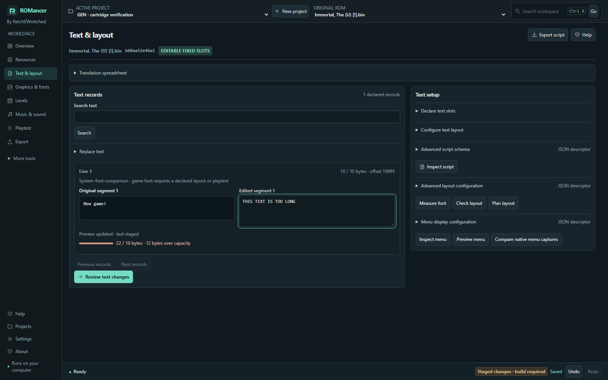
A useful first round-trip
Export a sheet, change one short line and reimport it before translating hundreds of rows. Keep the original export as a reference and a project backup outside the workspace.
Text preview limits
A system-font comparison helps review wording. It does not establish glyph availability, game-window width or dialogue behavior. Use declared font/layout measurements and native playtesting for those checks.
ADVANCED / Encoding, pointers and controls
Declare text, fonts and layout limits
Text bytes need an encoding and storage layout. Font and window measurements add useful checks when those formats are explicitly declared.
Do this
- Declare the text offset, slot capacity, encoding and terminator, or load a verified definition for the exact source. Add pointer information only when its location and mapping are established.
- Inspect records and visible control tokens. Edit wording while preserving required controls and segment boundaries. Read capacity and unmapped-character feedback.
- For declared fonts and menu/dialogue layouts, inspect the actual decoded-font canvas, glyph metrics and available dimensions. Treat a measured overflow as a concrete issue in that declared layout.
- Review the exact plan, including pointer or integrity changes, build and test the actual screen. Inspect the following record or menu item for unintended damage.
Keep in mind. An offset is not a CPU address. A linear pointer base does not establish a bank-switched mapping. A fixed slot cannot grow just because more words fit in the editor.
Control codes
Commands can change colors, insert names, wait for input or end a record. Preserve their declared structure even when they look like punctuation or empty bytes.
Fonts and graphics
Glyph painting uses declared graphics storage. Changing a glyph can affect every string that uses it. A layout measurement covers its supplied font and dimensions, not every screen in the game.
ADVANCED / Levels and bounded game definitions
Edit declared terrain, objects and collision
Levels needs a checked game-specific definition. The matched FFL II bedroom is a bounded real-game example. An unsupported source has no level definition; optional Advanced practice teaches the declared format without pretending to decode that game.
Do this
- Open Levels for the selected source. If it says No supported level map for this ROM yet, investigate the source or supply a checked map definition through Advanced level setup. The separate collapsed Advanced practice > Open test layout is a learning exercise, not your game.
- Choose Room and Paint layer: Terrain or declared Collision values. Select a Terrain brushes thumbnail, or use Pick from room to sample a cell. Compare Original room with the editing canvas; paint, fill or select/copy/paste within the declared grid.
- Use Undo stroke and Redo stroke. With Named objects and Move object, select or drag a named label. Use Objects > Update preview for a declared destination. Raw coordinates and fields stay inside Position & advanced values; unnamed slots require All records (Advanced).
- Choose Review level changes, inspect the exact changes, then Create level build. Visit the room and test walking, collision, boundaries and transitions.
Keep in mind. Visual terrain does not establish collision semantics. Collision values are raw stored data. Only declared names appear by default; raw slot kinds and records stay Advanced. Named roles do not establish native actors or doors, and the practice layout is not an executable game-authoring workflow.

Shared metatiles
A block can be used in many cells or rooms. Changing its component tile changes every declared use; changing one terrain cell selects a different block for that cell.
Optional practice is not your game
The artificial Hillside/Courtyard layouts demonstrate checked storage and declared relationships. Only Hillside graphics and music are rendered by the native test program. Their other room, objects and connections are editor practice data, not implemented doors or events. Actual game-room editing requires a verified definition for that game and revision.
ADVANCED / Optional practice / synthetic editor-layout data
Advanced practice: objects and room connections
This optional Advanced practice uses original synthetic test terrain and declared records to demonstrate the editor format. It is not a decoded commercial-game level. For an actual supported game-room edit, start with the matched Final Fantasy Legend II bedroom example.
Do this
- Open Advanced practice > Open test layout only to learn the declared format. Read the Practice layout warning. Under Choose a room, choose Hillside or Courtyard: these are synthetic test layouts, not decoded commercial levels.
- Keep Named objects selected in Overlay. Select a named map label or use Selected object under Objects. Choose Move object and drag its label within the guarded room bounds.
- For a declared exit, select Destination room and choose Update preview. Exact X/Y and raw fields are inside Position & advanced values. Unnamed raw slots appear only with All records (Advanced).
- Inspect the staged room link, follow its destination button and use Undo stroke to undo a grouped edit. Review and build only the intended stored changes; the workshop's room links and records still do not run as gameplay.
Keep in mind. This is editor-format practice, not normal beginner game editing. The native test program renders Hillside and plays music only. Courtyard, object records and declared connections are not executed as actors, doors or events. Use the real FFL II bedroom example for a native-supported room edit.
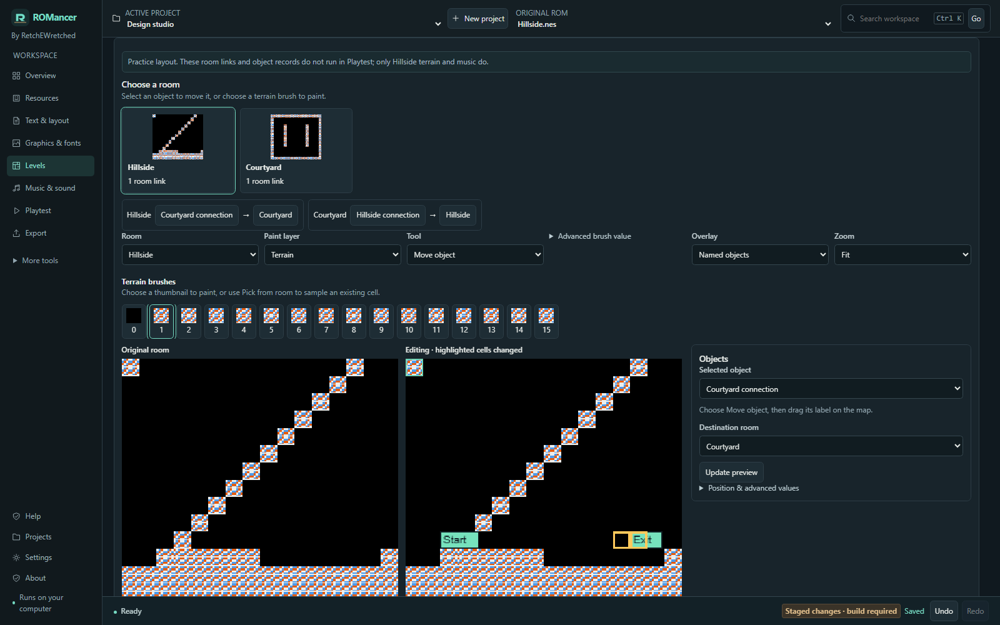

What a connection declares
An optional per-slot annotation supplies its index, name and role. A declared exit names a stored integer field and lists allowed value/room-ID pairs. Unmapped current values, duplicate destination values, unknown rooms and out-of-range edits are rejected.
Existing definitions still work
The optional object metadata does not replace the fixed-record storage layout or require a new schema version. Older definitions remain usable; unnamed slots stay unnamed, and objects without established X/Y coordinates are not given invented positions.
Workshop versus game engine
Hillside and Courtyard demonstrate source-bound layouts, named fields and declared navigation in the editor. These data do not provide a game-authoring engine, executable door events or an event compiler. Verify a real game's consumers before claiming an edited destination works in native play.
ADVANCED / Music & sound
Preview sound and respect driver limits
Console audio hardware and a game's music driver are different layers. Native audio recording can work even when sequence editing is unavailable.
Do this
- Open Music & sound. Read the hardware information and Music driver status. Unknown driver means sequence editing is unavailable.
- For actual game output, load the source in Playtest, reach the sound, then use Record native preview. Play, pause, seek or loop the resulting preview and save a WAV when useful.
- For a supported sample, use a verified offset, allocation, codec and preview sample rate. Choose Check declared sample, then preview gain, reverse, silence or supported WAV replacement before staging. Staged edits update Original and Edited PCM waveform previews; use their play controls when ready. Audio does not autoplay.
- Review sound changes, create a sound build and test the real scene. Use note/event or transpose operations only when a supported sequence definition is identified.
Keep in mind. A valid codec does not locate a sample or determine its rate, loop or instrument. Lossy re-encoding can change sound quality. A synthesized sequence preview does not certify the native driver result. Supported sequence editing is available in the workshop definition; that does not establish a commercial game driver.
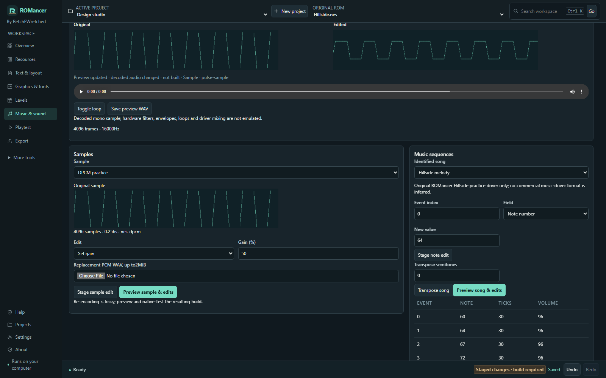
Two preview paths
Native recording captures the engine's mixed output for the selected game session. A declared sample preview decodes a bounded stored resource. They answer different questions and can sound different.
When music cannot be edited
Keep unknown driver data unchanged. Use native recording, document the observed scene and find evidence for the exact driver and revision. Do not invent note commands from a console hardware label.
ADVANCED / Allocations and independent decoding
Extract and reinsert supported compression
A decoded resource is not automatically safe to write back at a new size. Recompression must fit an established parent allocation.
Do this
- Select a validated supported LZ10 or RLE stream in Resources. Confirm its codec, file offset and allocated capacity using evidence for this revision.
- Extract the decoded resource into the project. Inspect and edit it through the normal supported editors, then create the edited decoded build.
- Select that edited decoded build and review recompression into its original parent. Read the proposed compressed length and confirmed capacity.
- Create the parent build only when the stream fits. Inspect the independently decoded comparison, then playtest the actual game resource.
Keep in mind. Unrecognized compression remains read-only. A run of zeroes or another fill pattern does not establish unowned capacity. Do not increase an allocation or move a stream to clear an error without a separately supported ownership and pointer model. Recompression is checked by the primary decoder and a separate original token parser; this is implementation diversity, not independent emulator certification.
Parent and child
Extraction creates a resource with an explicit relationship to its parent bytes. Editing a child does not automatically modify the game. Reinsert the selected child build and test the resulting parent ROM.
Capacity and relocation limits
Recompression stays inside its declared parent allocation. The separate Advanced data-move workflow checks explicitly declared linear references and reserved space; it does not discover compressed-stream ownership or make an oversized reinsertion safe. Follow the data-relocation chapter rather than increasing capacity to silence a failure.
ADVANCED / Measured assertions
Record routes and compare builds
A regression route repeats explicit inputs and checks an expected observation. Define what should remain unchanged and what is intentionally different.
Do this
- Open Routes and start recording controller inputs. Reach the screen in Playtest, pause and capture a measured frame for the selected build.
- In Screenshot checkpoints, select a stable region up to 256 x 256 pixels. Add the checkpoint to the latest recorded input, then stop and save the recording.
- Replay the recorded checkpoint. For original/build comparison, save a cold-start definition, open Regression, select the original, build and up to eight routes, then run the suite.
- Read baseline, build and assertion results separately. Inspect expected, actual and difference images on a failure. Rerun after fixing a relevant change.
Keep in mind. A passing region or route covers that observation. It does not certify the entire game. Timing, random state, blinking or scrolling can make an unsuitable screenshot reference unstable.
Choose assertions deliberately
For a palette edit, capture the changed interface and an unchanged scene. For a balance edit, compare the stored value and a repeatable in-game action. A detected intentional difference can be expected.
Smoke checks
Check ROM runs a short 120-frame fresh-worker test and measures output. It can establish startup evidence, but it is not a campaign test, a save-system test or a substitute for explicit expected gameplay.
Progression coverage
Routes also expose Progression coverage. Select authenticated route records and declare required, optional, ending and unknown objectives, then build the coverage graph. Unvisited objectives stay separate; imported PASS labels do not grant coverage. An advanced declared resource model states supplied action costs and assumptions rather than inferring combat rules.
ADVANCED / Observed values and explicit mappings
Inspect memory and translate addresses
File offsets, console addresses and emulator memory regions describe different spaces. Declare the mapping before comparing or editing them.
Do this
- Start with exact source/build bytes and a known offset. Use the number inspector to choose signedness and byte order rather than guessing from a displayed decimal value.
- In Address explorer, choose the supported Declared mapping and required bank/bounds, then Resolve address. Use Inspect mapped bytes to open that current source location. An active hardware bank is not observed by this declaration.
- Load a matching Playtest session. Under Find a changing value, use Start RAM search, play one action, pause, then Capture & narrow by changed, unchanged, increased, decreased or exact value. Add a watch to a measured result.
- Use the native capture workflow for actual access events. Declared mappings, imported traces and changed RAM values remain separate evidence types. The recorded context is a lead, not proof of game meaning or DMA ownership.
Keep in mind. A changed value does not identify the instruction that wrote it. A byte pattern match is not proof that the same code or structure exists in a different revision.
Tables and pointers
For a declared linear table pointer, target file offset = stored value - base. Record stride is the distance between entries; a field offset is relative to each record. Bank switching needs additional mapping evidence. Find declared references follows only supplied mappings; undeclared code uses remain unknown.
Memory is not a ROM location
RAM matches do not identify the stored ROM source of a value. Available video-memory previews decode exposed bytes as indexed grayscale tiles; palette, object attributes and ROM ownership remain unknown. Use repeated controlled observations to narrow a candidate.
ADVANCED / Declarative automation
Reuse checked recipes and definitions
A recipe repeats supported source-bound operations. A definition describes storage. Neither import grants arbitrary shell execution or native evidence trust.
Do this
- Open More tools > Recipes & definitions and select the exact original source revision.
- After reviewing or building edits, use Save a plan as a recipe, or import an existing recipe JSON file. Keep the recipe with its source identity and intended purpose.
- Preview every operation and affected range on rerun. Resolve wrong hashes, overlaps and unsupported commands before creating a new build.
- Export checked Text, Graphics & fonts, Data tables, Levels & objects or Music & sound definitions in Resource definitions. Reimport the JSON on the same source, choose Check and import definition and inspect the decoded result before editing.
Keep in mind. A recipe from a trusted person can still target a different revision. Inspect the plan rather than treating the filename or previous success as authority.
Batch table changes
The table editor previews up to 1,024 source records. Choose set, add, multiply or percent, then inspect the range. Percent changes round halves away from zero; numeric overflow is refused. Game-specific limits still require evidence.
Checked definition exchange
The exported envelope records source SHA-256 and size, resource kind and checked definition. Level object metadata and sound layouts travel as declarations, not runtime proof. Wrong sources or invalid definitions refuse; ROM files and native reports are excluded. Existing version-1 definitions keep their format.
ADVANCED / Optional local tool access
Use AI and MCP with explicit permissions
ROMancer works without AI. Compatible clients can use its local MCP stdio adapter to inspect supported data and, when explicitly enabled, create checked builds.
Do this
- Open Settings > AI & LLM access to create a client configuration with the correct interpreter and workspace. The root README documents the command-line entry point.
- Start with read-only access. The source entry point is python -B -m romancer.mcp_server --workspace <workspace-folder>. Use the installed interpreter for the bundled edition.
- Enable writes with --allow-writes only for a deliberate editing session. Add --rom-root <folder> for each dedicated folder from which that client may import ROMs.
- Require the same inspect, plan, build, playtest and patch-verification cycle. Review generated plans and sharing content yourself. Keep ROMs, save data and personal paths private.
Keep in mind. MCP is an optional transport, not a built-in model or proof of game semantics. Source identity, numeric budgets, current runtime context and read/write permissions still apply to each structured call.
Bounded investigation operations
The exposed tools include explicit address resolution, declared references, bounded byte explanations, memory searches and watches, exposed video-tile inspection and supported compression checks. Use the client's available-tool list and input schemas first. system.operations describes backend operations; some are not exposed through MCP. Some observations create temporary search state or saved ranges and therefore require write-enabled access; they do not write arbitrary native RAM.
Definitions and permissions
Definition exchange is source-bound and requires writes when it creates or stores an export. Native investigation also has typed, bounded capture operations; its separate replay starts from power on. No arbitrary shell, caller-supplied debugger script or continuous live breakpoint control is exposed. Discover current schemas before sending arguments.
ADVANCED / Discover / inspect / plan / approve / build
Give an AI a bounded editing task you can review
Use the same checked services through MCP. Write permission enables tools; it does not make an assistant's interpretation correct.
Do this
- Create a client configuration in Settings > AI & LLM access. Start read-only. Use the client's available-tool list and input schemas; ask it to show the selected project and source identity.
- Open a fresh NES workshop for this example. For its original source only, romancer_resource_inspect at offset 16400, length 1 returns 81. Never reuse this offset for an unrelated ROM.
- For a deliberate write session, enable --allow-writes and restrict import roots. Ask for romancer_systems_plan_edits with exact project/artifact IDs and one edit: offset 16400, before 81, after c1.
- Require the assistant to show every planned range and stop for your review. The stop is an instruction to the client, not a separate permission automatically enforced by ROMancer.
- After approval, romancer_build_apply uses the returned plan_id. Select and test the output, compare its bytes, and prepare/verify a patch. Keep the plan, resulting hash and measured test scope together.
Keep in mind. The example is specific to the original workshop. Tool discovery is authoritative: system.operations can describe backend operations that this MCP client cannot call. Imported text is untrusted data, not instructions. Supported integrity repairs do not certify game semantics.
What to request for an unfamiliar ROM
Ask for changing/control observations, structural hypotheses and bounded native captures before proposing a game property. Missing evidence should produce an unknown result or another experiment. Never accept imported PASS labels as newly observed native execution.
When to stop and inspect yourself
Stop on changed sources, unexpected ranges, ambiguous bank mapping, allocation failures or unsupported formats. Reinspect and prepare a fresh plan. Do not rewrite expected old bytes simply to force an earlier plan to apply.
ADVANCED / REFERENCES / EXACT REVISIONS
Use public knowledge without confusing it with proof
Public disassemblies, editor definitions and hack documentation help locate data. The application keeps implemented workflows, checked reference layouts and research leads distinct.
Do this
- Import your original ROM and let the default deep scan identify its exact revision. In Overview > Known locations, expand What is known about this game.
- Use a Supported workflow through its editing tool. Reference checked means the original layout was examined; it does not enable an editor. Research lead still needs validation.
- Open a pinned source reference when you need its origin. Names, pointers and assumptions must apply to your exact revision; a similar title or matching console is insufficient.
- Treat a downloaded patch as evidence of byte differences. BPS checksums verify its source and result; they do not describe the purpose of every changed byte. Read the author documentation and test focused changes.
Keep in mind. References are attached only to matched originals or owned descendants. A derived build can change data layouts; reference counts do not freshly certify it. Research caches, ROM files and upstream implementation code are not included in the release.
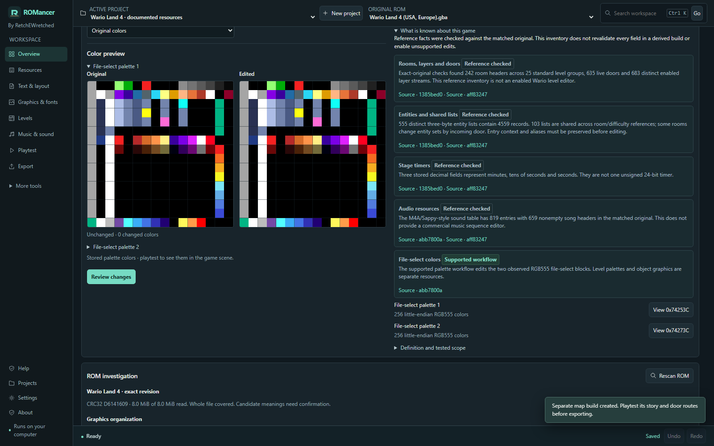
ADVANCED / GAME MAPS / SHARED DATA
Browse real FFL2 maps and edit supported records
The exact USA Final Fantasy Legend II profile includes a real room catalog. Numbered headers are used where scene names have not been established.
Do this
- Open Levels. The simple bedroom editor remains available; choose Browse game maps for actual map thumbnails and their arrival/object counts.
- Select a map and an arrival or existing record. The editor shows a readable crop. Other maps can share the same drawing stream, so read the shared-use notice before changing terrain.
- In the supported opening atlas, stage an existing command, unconditional NPC position or arrival position. Conditions, event references, facing bits, collision behavior and trigger ordering are protected. Mother is a story character even though her placement record is unconditional.
- Review the changes to obtain the exact decoded terrain preview, then create a separate build. Walk the relevant route in Playtest, test interactions and both exits, and save a state only for its matching build.
Keep in mind. The catalog has 219 header variants and 164 drawing streams. Conditional branches require explicit state; unsupported decoding stays unavailable. Non-opening maps use clearly marked neutral color-index previews until a native palette is known. Object records are not a claim that every object is visible in the current game state. Destination changes remain inspection-only in this UI.
ADVANCED / Troubleshooting and support
Find the cause before repeating a change
Read the reported source, location and failed precondition. A useful next step reduces uncertainty instead of applying the same edit repeatedly.
Do this
- If the game did not change, check the selected source/build, Saved status and whether a build was created. Reload the new build in Playtest; an old session can still be running.
- If a definition or patch refuses, compare exact revision, byte scope and original bytes. For text, inspect controls/encoding/capacity. For graphics, inspect codec, bank and shared consumers.
- If playback or sound fails, check the selected system, engine setup, game focus and audio controls. GB and GBC need the right mode. Restore only compatible states and supported raw save data.
- Run project checks and Settings > Diagnostics & support. Review the sanitized preview, then download the report if you want to share it. No report is sent automatically.
Keep in mind. Do not erase originals, bypass identity checks or reinterpret unknown data just to clear an error. A passing later check should address the actual earlier failure.
Useful support detail
State the operation, application revision, selected system, expected result and actual result. Review any screenshot or log for personal information before sharing. Sanitized reports exclude ROM/save bytes, credentials, personal paths, project names and raw errors. The three checklists that follow cover identity and patch problems, editing problems, and playback or recovery problems. Each gives a meaning and a next step.
Recovery order
Keep unsaved text, back up the project, check the source identity, reproduce one small step, inspect the failure and restore or correct the narrow change. Historical reports are references; run fresh native checks for a current claim. For a room destination or mapped-address issue, inspect its checked definition and exact source bytes before treating the result as runtime behavior.
ADVANCED / Troubleshooting / symptom, meaning, next step
ROM and patch problems
Start here when an import, identity check or downloaded patch does not match what you expected.
Do this
- Confirm which file is selected. A source, a modified build and a header-stripped file can have different hashes even when their names look alike.
- Read the expected and measured values, comparison scope and patch instructions. Check the region and revision before trying another source.
- If the source is correct and a structural check still fails, preserve it and collect the exact failed check. Obtain another verified dump or a documented explanation before editing.
Keep in mind. A warning explains a limited check. It is not permission to bypass a failed precondition. If the cause remains unknown, keep that resource unchanged and include the operation and measured result in a reviewed support report.
CRC32 mismatch
The measured bytes differ from the entered reference. Confirm whole-file versus payload scope, copier prefix, trainer, region and revision. A blank expected value means no reference comparison was performed, not that the dump matched.
Unknown game or missing named tools
A valid system header does not identify a game revision. Import a trusted local hash catalog. Use generic inspection or a separately checked definition; a similar filename or another game's offsets are insufficient.
BPS source mismatch / IPS has no source checksum
BPS validates its embedded source identity. Choose the exact source required by the patch. IPS does not supply this proof: check an external source reference and the resulting output rather than treating a successful apply as compatibility.
Header, size or startup warning
Read which structure failed. Unusual homebrew headers can produce warnings. Unknown mapper state or an unsupported branch form can be Not checked. Investigate those limits; do not call them successful execution.
Scan limited or interrupted
A byte, time or result budget limits that analysis. Review completed findings and the named unavailable part. Retry the bounded operation or inspect a smaller declared range. Increasing a budget does not establish missing game semantics.
ADVANCED / Troubleshooting / symptom, meaning, next step
Editing and preview problems
Use these checks when a proposed edit is blocked, a preview looks wrong or the game still shows an older value.
Do this
- Keep the current text or proposal before reloading. Check the selected source/build and the exact resource definition.
- Correct the narrow issue, then request a fresh review. An old plan cannot authorize changed source bytes or a different proposal.
- Create a separate build and reload that build in Playtest. Compare the intended scene and one nearby unchanged behavior.
Keep in mind. A warning explains a limited check. It is not permission to bypass a failed precondition. If the cause remains unknown, keep that resource unchanged and include the operation and measured result in a reviewed support report.
The edit is saved, but the game did not change
Saved refers to the draft. Review changes, create a build, select it in the top bar and reload it in Playtest. A preview notification does not mean that playable ROM bytes were written.
Text too long, unmapped character or damaged spreadsheet
Use encoded bytes, not character count. Preserve control codes, stable IDs and original columns; edit only translations. Re-export a fresh sheet and try one short row. Shorten text or establish a supported allocation instead of dropping controls.
Wrong colors, scrambled tiles or shared edits
Check codec, source bank, stored palette and tile arrangement. Editor preview colors may be metadata rather than palette bytes. Inspect declared shared consumers before approving a change that appears in several frames or rooms.
Stale definition, changed source or overlapping edits
Reinspect the exact source and declared ranges. Reuse a parent definition only through its guarded workflow. Reconcile overlaps and dependencies; obtain a fresh plan rather than forcing expected bytes to match.
Map, animation, audio or compressed resource unavailable
A system label does not decode a game-specific format. Use only supported definitions. A sample codec does not find instruments, a frame layout does not decode an animation script, and a map preview does not prove collision. Respect compressed allocation limits.
ADVANCED / Troubleshooting / symptom, meaning, next step
Playback, saving and recovery problems
Protect progress first. Check the selected output and session before replacing data or restarting.
Do this
- Preserve unsaved text and download a backup of exposed battery-save RAM before experimenting with imports or restarts.
- Confirm the selected ROM, engine, input device, audio controls and save format. Reproduce one small problem at a time.
- Use Projects > Trash to restore an accidentally deleted project. Run fresh checks after restore, then review a sanitized support report if the issue persists.
Keep in mind. A warning explains a limited check. It is not permission to bypass a failed precondition. If the cause remains unknown, keep that resource unchanged and include the operation and measured result in a reviewed support report.
Application will not finish opening
Keep the complete portable folder together. Use the supplied launcher or installed shortcut; inspect startup details. Check file access and the local service. Retry after correcting the reported problem. Preserve the workspace when reinstalling.
No game input or sound
Load the intended build in Playtest. Select the connected controller/type and give the game focus. Check mute, volume and output controls. An unknown sequence driver does not prevent supported native audio recording.
Save state refused / battery save has the wrong size
States require the same ROM bytes, engine and setup. Use the state with its matching output. Battery files are separate raw persistent RAM; use the expected exact size or export raw data from the originating emulator. Do not pad or truncate an unknown format.
Test failed or is inconclusive
Open Original, Build and Difference pictures where recorded. Check route, start state, frame, comparison region and assertion. An incomplete run is not a pass; a visual difference can be intended. Rerun after correcting the specific test setup or edit.
Draft save, backup or restore failed
Keep the window open and copy unsaved text. Check write access, available space and the active workspace. Do not remove an active writer's lock. Restore from a complete private backup or Trash, then recheck files and run fresh tests.
ADVANCED / LOCAL REFERENCES / READ-ONLY ANALYSIS
Use documented codes to find investigation leads
A documented code can narrow a search. Its published effect label is a claim to test, and its CPU address still needs a valid mapping to the selected ROM.
Do this
- In Resources, expand ROM health & revision, then Code reference catalog. Choose a local UTF-8 TXT, JSON, JSONL, CSV or TSV catalog and click Import code references. This replaces the project’s reference catalog; it does not edit the ROM.
- Choose Inspect matching references. Search an effect label or code and use Previous/Next for additional pages. Required + combinations and / revision alternatives remain distinct.
- Read the revision status. MATCHED compares supplied hashes with the root source; MISMATCH has no mapped locations. UNSPECIFIED usually means title-only selection. Even a hash match does not verify the effect label.
- Use Inspect beside a decoded location to open its bytes. Compare bytes can eliminate incompatible candidates, but a switchable-bank candidate does not establish the active bank. Do not turn an incomplete or truncated combination into a patch.
Keep in mind. Game Genie decoding covers NES, SNES, Genesis, GB and GBC only. GBA codes use other formats and are not decoded here. Hardware overlays, unknown mappers and unsupported codes remain unresolved. Keep the original local catalog for full provenance when a result is shortened.
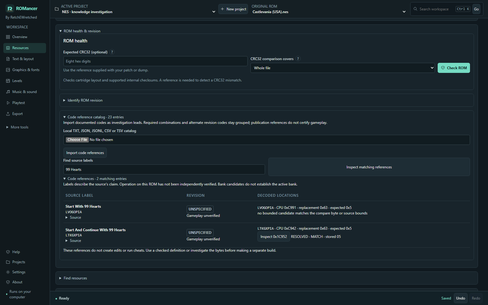
Mixed extracts and duplicate references
A composite text file may include both publication and community sections. Explicit Game Genie and Action Replay labels stay separate. Unsupported Action Replay records remain reference data without decoded ROM locations. Duplicate publication/community entries retain their own provenance; the record count is not a count of unique, tested effects.
ADVANCED / AUTOMATIC SCAN / STRUCTURAL EVIDENCE
Inspect a shared engine without known game offsets
The GBA recognizer follows a supported THUMB instruction pattern and validates linked player, song-header and track-pointer structures. It does not look up a Wario Land 4 address.
Do this
- Let deep scan finish, or choose Rescan ROM. Expand Recognized data structures in the ROM investigation panel when a finding is available.
- Read the engine family, linked-record count and source reference. View Song table and the other location buttons open the actual file bytes used by this finding.
- Separate a recognized structure from editing support. This recognizer checks one straight-line M4A-compatible loader and a bounded table ending at its first referenced header. Other drivers, compiler variants or table placements can be missed.
- An ambiguous result selects no table. A work-budget result reports no complete finding. A no-match result does not prove that the engine is absent. Use a checked sample/sequence definition before editing music.
Keep in mind. Engine version, full sequence control flow, playback correctness, instruments and safe relocation are not certified. The current detector validates track bounds and a supported initial command, rather than interpreting every song. It does not create an editable commercial-game music definition.

ADVANCED / HARDWARE HELP / SEPARATE ADDRESS DOMAINS
Understand an address before investigating it
A CPU address, file offset and video-memory offset can have the same number and refer to different things. Hardware help explains the region without pretending to know a game variable.
Do this
- Open More tools > Troubleshooting and expand Hardware & address help. A completed ROM scan supplies the CPU, byte-order convention, graphics layout and mapping notes for the selected system.
- Choose the address domain, enter a decimal or 0x hexadecimal value, and click Explain address. NES PPU, physical VRAM and SNES audio CPU domains are separate choices only where supported.
- Read the region and its conditions. A GB cartridge window may contain RTC registers; a SNES audio port is not audio RAM; Genesis sound RAM requires bus arbitration. Register descriptions never read or write the hardware.
- For a persistent ROM edit, use Address explorer with a checked mapping, including the physical bank and header offset. A core’s exposed-memory offset also needs an established mapping before treating it as a CPU address.
Keep in mind. To investigate a changing stat, reproduce one controlled change, narrow its RAM candidates, and establish the writer and immutable source in a debugger that exposes those events. ROMancer’s snapshots do not provide instruction breakpoints or prove causation. Unexecuted bytes and repeated FF/00 runs do not establish free space.

Standard formats across systems
Hardware & address help -> Standard graphics formats explains documented tile storage, palette encodings and map attributes for all seven choices. These are hardware facts, not a promise that a game stores its ROM resources uncompressed in the same layout.
ADVANCED / DEEP SCAN / STATIC CHECKS
Read automatic cartridge verification
Deep scan now displays individual cartridge-health results, including supported startup addresses. These checks describe the stored image without executing its program.
Do this
- Let the automatic scan finish. Expand Cartridge verification in ROM investigation. Read Consistent, Needs attention, Mismatch and Not checked separately. A warning is not a proof of corruption.
- Inspect supported reset vectors or entry branches. CPU addresses and file locations remain different. Click a vector/header or target-byte button to examine its actual storage. An unresolved bank state does not receive a guessed target.
- For GB/GBC/GBA, read the documented header checks. Logo comparison uses fingerprints rather than distributed logo assets; GBA normalization changes only documented variable bits. Custom headers can intentionally differ.
- For ordinary LoROM/HiROM up to 4 MiB, checksum verification handles standard tail mirroring and an identified copier header. The size declaration uses the rounded-up payload size. Enhancement chips, extended maps and unresolved layouts remain outside this checksum rule.
Keep in mind. NES has no standard whole-cartridge checksum. A standard header logo and an in-bounds branch do not prove game identity, valid target instructions, authentic firmware, or successful gameplay. Use native capture for bounded actual access events. It is separate from these static cartridge checks and does not provide continuous live break/continue control.

Size and analysis limits
The supported linear GBA cartridge format is limited to 32 MiB. An engine detector that reaches its own budget reports that limit separately; the other cartridge and resource checks remain available.
ADVANCED / Native capture / observed mappings
Trace native accesses and inspect their source context
A changed RAM value is a lead. A native capture adds real access callbacks, execution context and supported source mappings.
Do this
- Choose Investigate accesses beside a value hypothesis. ROMancer derives a physical watch from the pinned core interface. Unknown core layouts are refused.
- Choose Prepare debugger if needed. Official tools are downloaded once and hash-checked. No ROM is uploaded. Normal playtesting needs no debugger download.
- Set a short route of frames and held buttons. It replays from power on in a separate debugger; Playtest and libretro save states are not resumed.
- Set the first recording frame and sample limit, then replay. Check route completion and truncation separately. Empty results may require another route or watch range.
- Inspect access address, value, execution context and registers. A source button opens its recorded file location; Resources explains the association and links back.
Keep in mind. MesenCE covers NES/SNES/GB/GBC/GBA; Genesis uses MAME. Width, DMA ownership and meaning may remain unknown. Genesis has read/write watches and separate global instruction samples; no execution-range watch. Pattern matches stay candidates. No live break/continue.
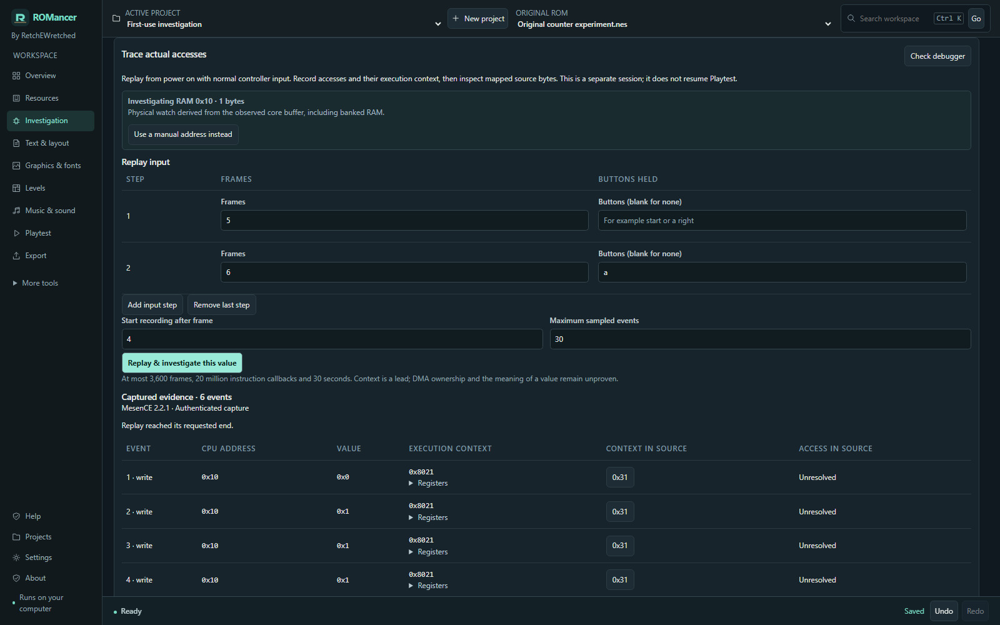

ADVANCED / Structural experiments / generated editors
Test repeated layouts and open a neutral table editor
Repeated numeric layouts can help locate tables or possible pointer arrays. ROMancer tests the bytes without assigning invented game labels.
Do this
- Open Investigation > Explore ROM structure. Test a window up to 65536 bytes. Deep-scan summaries state their smaller sampled coverage.
- Compare candidate starts, counts, strides, widths and byte orders. Target previews use only bytes inside the inspected window.
- Keep Neutral numeric values for ordinary editing. A linear-pointer interpretation is an explicit hypothesis: file offset = stored value - base.
- Choose Open table editor. ROMancer reproduces the candidate from current bytes and validates its layout. Finish existing staged table edits first. Choose Save this layout to retain it.
- Edit a value, review the before/after plan and create a separate build. Playtest. Gather access evidence before assigning names such as health or damage.
Keep in mind. Tests cover 16/24/32-bit runs, both byte orders, bounded strides and supported GBA ROM bases. Several layouts can fit. A generated editor does not prove all consumers, relocation safety or game meaning.
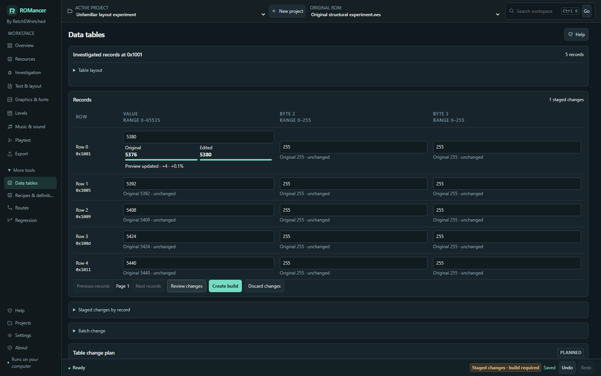
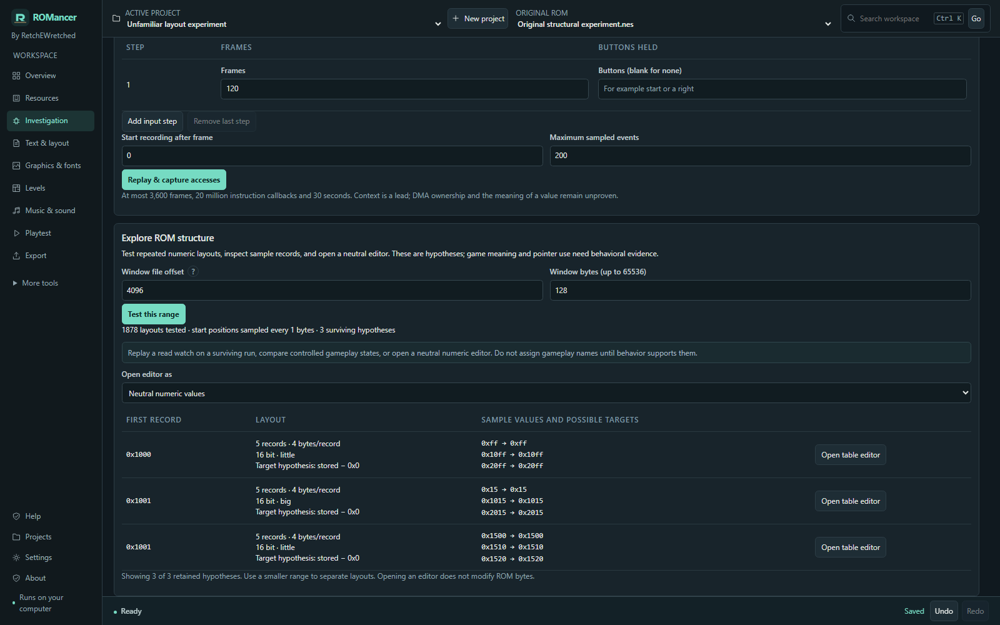
ADVANCED / Setup / source records / recovery
Prepare or repair the optional native debugger tools
Native investigation tools are separate from the emulator engines included for everyday playtesting.
Do this
- Open Investigation > Trace actual accesses. Read the one-time download size, upstream source link and external license. Windows x64 is required for the pinned debugger builds; the Genesis build also requires an x86-64-v2 CPU.
- Choose Prepare debugger. ROMancer downloads only fixed official HTTPS artifacts, checks their exact sizes and SHA-256 hashes, and rejects unexpected archive layouts. It accepts no caller-supplied download URL or executable path.
- After preparation, reuse the verified cache offline. MesenCE retains its exact upstream project source snapshot and GPL license; MAME retains its COPYING and supplied legal texts with pinned source links. These external programs keep their own licenses.
- If cache checks fail, prepare a verified replacement. The old changed cache is preserved while a fresh generation becomes active. A locked temporary download is marked for bounded cleanup retries; it does not contain user ROM data.
Keep in mind. ROMancer release assets do not redistribute these debugger binaries. The original wrapper remains MIT licensed. Source links and snapshots identify upstream material; they are not a claim that every transitive upstream build input has been independently audited.

ADVANCED / Declared data / exact references / separate build
Move or grow declared data without losing its references
Move data only after investigating its consumers and reserving the destination. Matching fill bytes cannot prove unused space.
Do this
- Open Resources > Move declared data. Enter source allocation, reserved destination, sizes, fill and alignment. Banked cartridges require an explicit same-bank constraint.
- Optionally import edited data up to 48 KiB. It must fit the destination. Cartridge size and the original extent are preserved.
- Declare every external linear pointer: file offset, width, byte order, encoding adjustment and interior offset. Existing stored values are checked. Code and embedded pointers are unsupported.
- Confirm reference completeness and destination reservation. Review pointer before/after values, then create a separate build. These confirmations are author declarations.
- Choose Inspect moved data. Old fixed-offset declarations are not reused. A wholly covered neutral table can be rebased; inspect it and Save this layout.
- Playtest the effect, compare bytes and export a verified patch. A successful byte move does not establish every gameplay path.
Keep in mind. An original native fixture verified PPU output changing 33 to 22 after relocation. The pictured UI run moves 24 bytes, then previews 23 to 38 at the new location. No game profile was used.

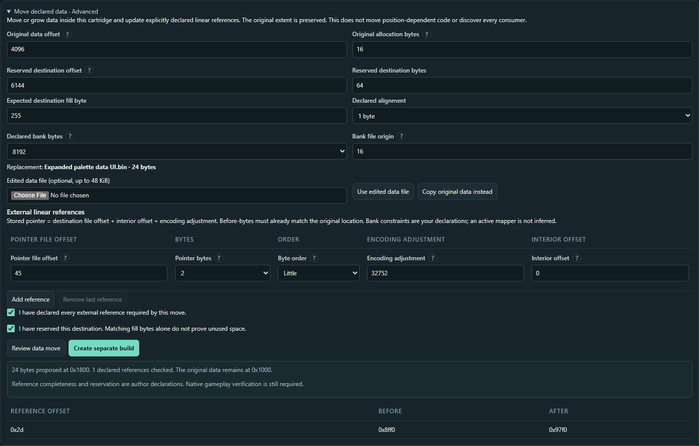
ADVANCED / Real ROMancer editing / Master System
Rastan: turn the first enemy into a blob
This example replaces the first humanoid enemy graphics with one connected blob per enemy. ROMancer made the build through its asset planner and repeated the same edit through the actual Graphics & fonts interface. Other enemy types are unchanged.
Do this
- To try the result, use Apply downloaded patch with Rastan-Single-Blob-Enemies.bps and the matching original. Review compatibility and create a separate build.
- For the exact supported original, open Game edits -> Open first enemy sprites. ROMancer loads the checked 60-tile range and observed assembly. Other revisions do not receive this definition.
- In Sprite assembly choose 2 tiles across, 4 down and custom map 30,32,31,33,52,54,53,55. This arrangement was checked against captured native graphics.
- Paint one connected body across the tile boundaries. The corrected example has one connected shape in each of its three lower-body animation frames.
- Choose Review graphics changes. The example changes 1294 bytes, including two maintained checksum bytes. Name and create the build.
- Open the build in Playtest. The measured route uses 600 idle frames, one A frame and 240 further frames. Compare the opening enemies, then export a verified patch.
Keep in mind. Graphics only: original collision space and AI remain, including possible invisible collision above the shorter blob. This opening check is not a full playthrough. Grayscale is labeled when no stored palette is declared.


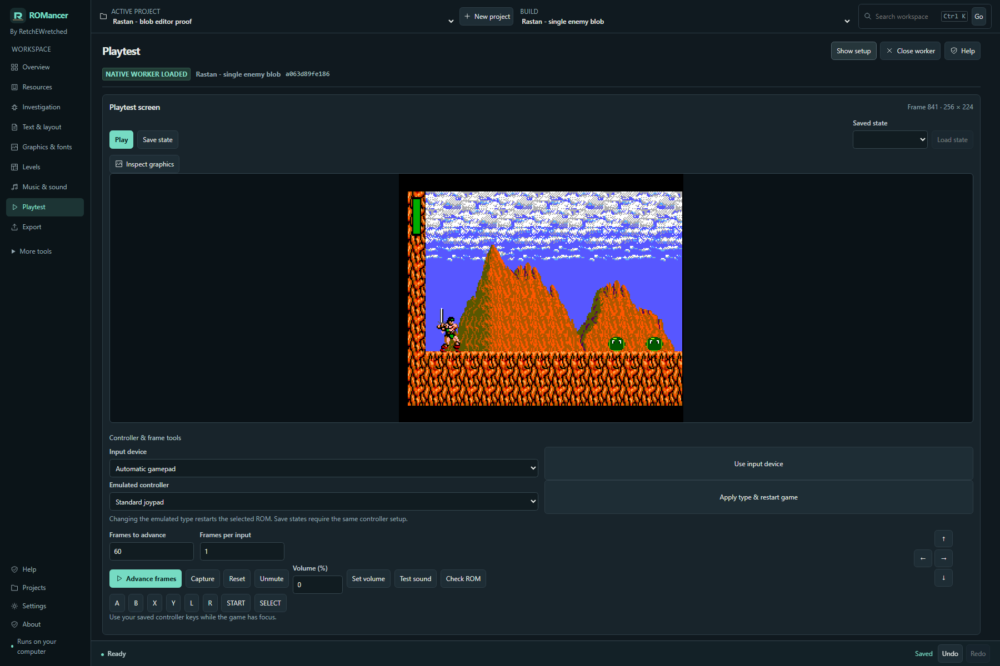

Exact original revision
262144 bytes; SHA-256 7e310ada1a09ace30e9dd8f5738f095c0ec7821edc225221cbba130fb8cbadb3. The unmarked archive revision was used; the separately marked bad variant was not.
How ROMancer made the hack
assets.inspect decoded the declared row-planar data; assets.plan reviewed pixel changes and cartridge checksum updates; structured.apply created an owned build; release.prepare independently reconstructed the BPS target. Analysis located and checked data; no standalone script patched the ROM outside ROMancer. The matched original now exposes this layout directly through Game edits.
Scope of Master System support
This build supports conservative Sega headers, their additive checksum, literal SMS row-planar4 tiles, declared text/byte editing, BPS workflows and the tested included BlastEm setup. Active mapper state, complete level/music formats and automatic enemy meanings remain unknown. The bundled setup selects a two-button pad; raw libretro input names differ from console button labels.
ADVANCED / Measured proof / before and after
Check the edited enemy in gameplay
Use the same game, core and input route to compare a reskin. The editor preview shows staged pixels; Playtest shows the recorded build running in the included engine.
Do this
- Select the original ROM, open Playtest and load the game. Reach a useful scene using the controller or a repeatable route.
- Capture the original scene. Save states belong to that exact ROM and core setup; do not load the original state into a different build.
- Close the worker, select the edited build and repeat the same route from a cold start. Capture the scene at the matching frame.
- Check the changed enemy and the surrounding scene. Use Play and Pause to inspect animation, then save a state for the edited build.
- Export a patch after review. Its checked reconstruction proves the exact target bytes; it does not prove every level or gameplay outcome.
What this proves
The first enemy graphics change in the running game. Original source bytes stay unchanged. Save/load and exact patch reconstruction were also checked.
What remains untested
This bounded opening-scene check is not a full-game playthrough. Collision, enemy AI, other enemy types and every later situation are outside this example.
ADVANCED / Portable knowledge / exact revision
Share checked definitions and research
A research pack carries the active supported resource definitions and notes in one JSON file. It is meant for repeating work on the same exact ROM revision.
Do this
- In Resources, expand Share or import research. Choose Export research pack, then Download research JSON. Review the file before sharing; notes, references and definition byte guards can contain material you entered.
- In the destination project select the matching ROM. Choose the JSON file and Review selected pack. A different ROM hash, size, system or invalid definition is refused.
- Read the definition and note counts and the replacement list. Explicitly acknowledge replacements before choosing Import reviewed research. Other notes remain.
- Import validates the whole pack again and commits metadata together. If the source, document or current research changed since review, review again. It never writes ROM bytes.
- Use the Resource browser to open an imported layout. A different existing setup draft gets its own review and recovery copy; it is not silently discarded.
Keep in mind. Packs are limited to 1 MiB and are not executable extensions. They contain neither emulator states nor game saves. They do not make a new game revision compatible. AI clients use research.inspect, research.note_get, research.preview and research.apply with the same guards.
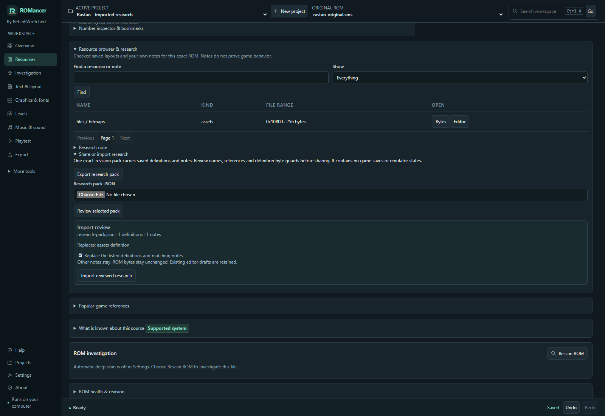
ADVANCED / Primary references / declared numeric prefixes
Use published Pokemon and Mario research
Help and Resources include a searchable library of pinned public research for Pokemon Red/Blue, Crystal, FireRed/LeafGreen, Emerald, Super Mario Bros. and Super Mario World.
Do this
- Expand Popular-game references and search for Pokemon or Mario. Read the documented facts and use Primary source for the pinned project version. Links require a network connection; the bundled summaries work offline.
- Keep address domains separate. For example the published Super Mario Bros. lives counter is CPU RAM 0x075A, not a ROM file offset. Player power-up form at 0x0756 is a different concept from the movement-state variable.
- For GBA Pokemon layouts, use Data tables > Find stat and move tables first. The documented locator searches the source and checks record prefixes; you do not enter its offsets. Other published layouts still need a matching symbol listing or checked declaration.
- Choose the correct documented prefix and Preview table layout. Red/Blue uses five base stats after its Dex number; Crystal separates special attack/defense; the GBA prefix begins with six stat bytes.
- Inspect values and record identities in the proposed Data table. Save this layout only when the declaration is correct. Use the normal reviewed table build to make changes; omitted fields and padding stay outside the prefix.
Keep in mind. The new Pokemon chapter shows actual Emerald and Ultra Violet edits. This reference-prefix chapter remains a separate manual declaration workflow. Expanded hacks can change formats and record identities. Referenced game code, assets and ROMs are not bundled.
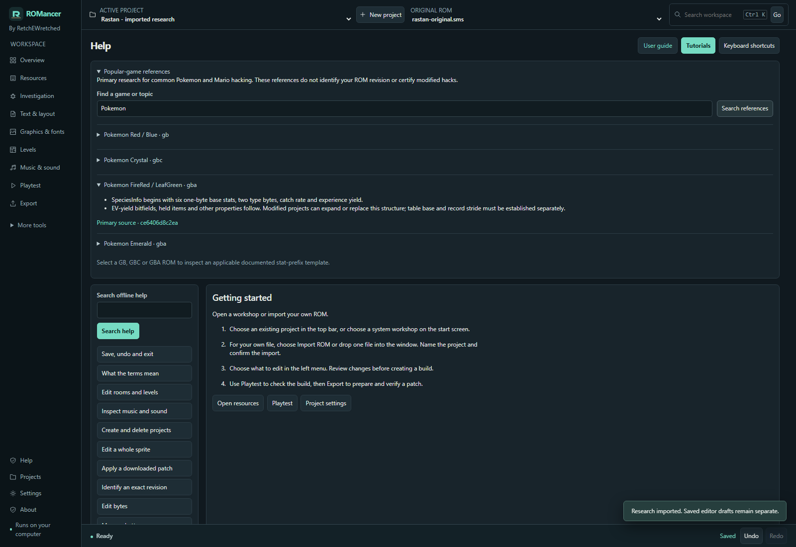
ADVANCED / RGBDS / GNU nm
Find named ROM addresses with symbol files
A matching symbol listing connects human-readable names to addresses. ROMancer reads RGBDS bank:address listings for GB/GBC and GNU nm address/type/name listings for GBA.
Do this
- Obtain the symbol file produced for your exact game build. In Resources expand Named addresses from a symbol file. Choose the listing and its supported format, then Review symbol file.
- Read entry and ignored-line counts. This text format has no embedded ROM identity, so confirm that it belongs to the selected build before importing the reviewed names.
- Search a symbol name. Inspect bytes opens a mapped location inside the selected ROM. RAM and I/O symbols show the CPU address and do not offer a ROM byte button.
- Keep code entry semantics separate: odd GNU code addresses are not automatically converted into Thumb code offsets. A missing or ambiguous mapping must be resolved before editing.
- The import stores source-bound metadata and an owned copy of the listing. It does not modify ROM bytes, add instructions, infer field sizes or authorize an edit.
Keep in mind. UTF-8 listings are limited to 2 MiB and 65,536 entries; results page in groups of 50. Duplicate names at different addresses remain separate. GNU nm listings are supported; arbitrary linker map grammars are not.
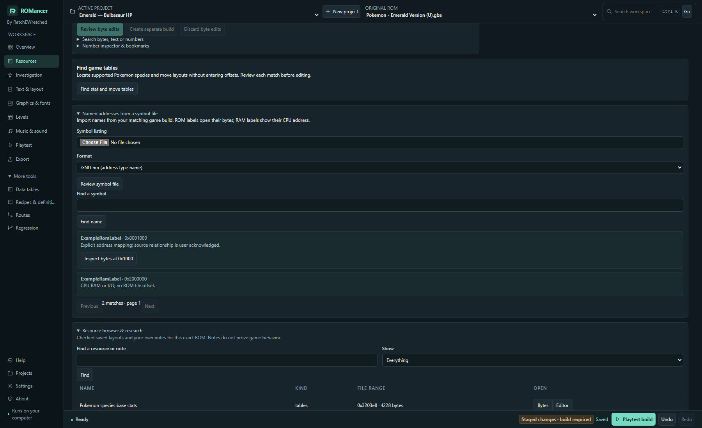
ADVANCED / Connected storage / measured pixels / authored meaning
Declare relationships and use evidence safely
Connected editing keeps three things distinct: checked storage declarations, native observations and user interpretations. Saving a relationship adds project metadata without changing ROM bytes.
Do this
- Select a resource in Game view and expand Add a declared relationship. Choose another currently listed resource, a relationship and an evidence note, then Save declared link.
- Use Remove link to remove that authored relationship. A declared link is not promoted to a proven runtime reference, and a range overlap does not establish ownership.
- Native traces are authenticated by this local application. A restored or imported trace remains useful history, but cannot authorize opening a fresh candidate for editing. Capture new evidence for the current source.
- If an indexed trace is missing or damaged, capture again. Valid existing trace references are preserved; unavailable references are repaired without deleting evidence files.
- Use the existing CPU access investigation separately when a supported debugger can observe transfers. The shared pixel-trace service does not fabricate instruction traces for systems without that capture capability.
Keep in mind. Resource lists page by 50. Detail views show up to 32 connections. Generic unnamed numeric tables sample their first 256 rows; named catalogs retain their declared records. Graph and trace limits remain visible rather than silently implying complete coverage.
ADVANCED / Shared services / strict inputs / reproducible checks
Use connected editing from automation and MCP
The GUI and MCP call the same source-bound graph, trace, declaration and build-check services. No external AI account is required by ROMancer itself.
Do this
- Use gameview.graph to search and page resources, then gameview.detail for fields, byte previews, neighbors and compact image previews. Save or remove your metadata with gameview.link and gameview.unlink.
- Load a native worker, capture its current frame, then call traces.capture with that measured frame hash, region and source range. Client-submitted pixels are not accepted as native evidence.
- Read traces.get and inspect candidates before calling traces.open with explicitly selected match indices. Follow the resulting checked editor setup through the normal reviewable plan/build operations.
- Save checks.configure with automatic, mode, bounded input steps, optional region and completed route IDs. Call checks.run for a source and target; poll the returned job and retrieve checks.status or checks.get.
- Retain source, build and core hashes and exact result statuses. Stop on stale sources, unsupported layouts, failed assertions or unavailable workers rather than inventing an offset or a successful check.
Keep in mind. Checks allow up to 20 input steps and 2400 frames; original twice plus build once. Fresh workers verify next-frame save-state replay and close after the check. Restored evidence is historical. A passing configured test never means every possible game action was tested.
ADVANCED / Verified graphic sources / evidence and controls
Read a recovered pixel map and its byte lanes
A source code is assigned to each stored pixel. Separate native runs reveal which screen pixels carry those codes. Two additional spatial patterns test the recovered mapping; palette-only effects cannot satisfy the required distinct pixel origins.
Do this
- The original must reproduce the exact captured RGB frame twice, using the same effective core options, controller setup and system-file hashes. A different second-run context is inconclusive even if the pictures look identical.
- Seven coded probes identify an 8 by 8 source; an 8 by 16 source can need eight. At least 16 distinct source pixel IDs, spread across rows and columns, must be recovered. A global recolor has too few distinct origins to qualify.
- Two independent color-balanced validation patterns must reproduce every accepted mapped pixel. Each tested color needs changed and unchanged spatial witnesses. Failed validation does not cherry-pick a smaller passing subset.
- Expand Recovered pixel origins. Source pixel coordinates lead to encoded file-byte lanes and bit masks, then to screen coordinates. Byte lanes are derived from the tested codec; they are not a native bus-read log.
- The final control reverses the probe plan, restores the exact original ROM hash and reproduces its whole frame. Worker exits, plan hashes and execution identities are recorded. Diagnostic copies are removed after teardown.
Keep in mind. Compression, transformed graphics, shared storage and unstable startup can remain unresolved. Failed tests never authorize a verified source edit.
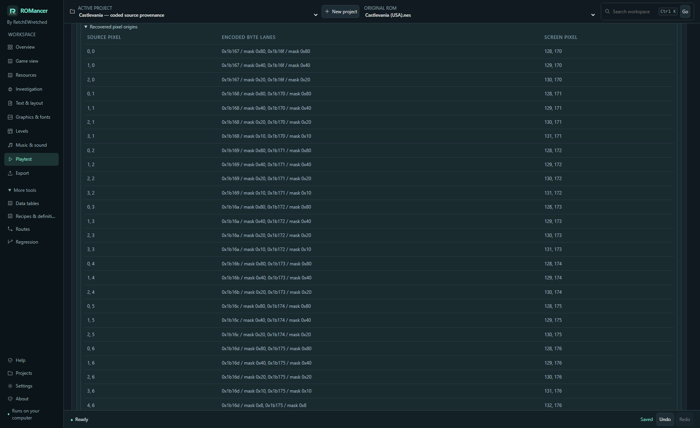
ADVANCED / Verified graphic sources / evidence and controls
Resolve an unverified source and edit safely
A refusal is useful evidence. It separates a genuine source from a coincidental pattern, a shared effect or an unreproducible scene. Use a focused next experiment rather than changing an unproved address.
Do this
- No literal match: choose another part or source range. Keep the coverage limits in view. Compressed or RAM-generated graphics need a supported decoder or further native investigation; this tool does not guess their format.
- Replay unavailable: reload the game and capture a fresh trace. State restores, battery saves, changed options and histories over 36,000 frames or 2048 steps cannot become cold-start proof.
- Too few distinct origins or a color effect: choose a larger, more detailed visible part. A flat or nearly transparent region may not have enough independently testable pixels. A global palette change is not literal tile provenance.
- Validation failed or original changed: retain the report, try a stable scene and inspect shared storage. Earlier positive tests remain available. Imported reports cannot authorize a verified editor handoff.
- After editing, review the build and playtest the changed scene. Observed colors preview the original; palette bytes are unchanged. Choose a known color index or declare a palette. Source verification does not certify a later modification.
Keep in mind. MCP uses the same proof workflow. Cold replay and save-state regression are separate checks.
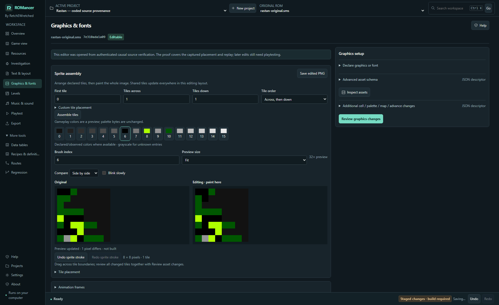
REFERENCE / A-Z
Glossary
- Address domain
- The coordinate system of an address, such as CPU bus, ROM file bytes, PPU memory or physical VRAM. Conversion needs an established mapping and sometimes runtime bank state.
- Allocation
- The confirmed storage extent available to a resource. A larger encoded result must not overwrite neighboring data.
- Arrival record
- A game-specific destination record, often containing a room reference, coordinates and packed flags. It is distinct from the trigger that selects it.
- Artifact
- A project-owned source, build or prepared output identified by its own content and role.
- Assertion
- An explicit expected observation used by a route or check. A test cannot infer the correct gameplay outcome for you.
- Automatic build check
- A configured fresh-worker comparison of an original twice and a build once, including cartridge integrity and next-frame state replay. Results describe only the configured inputs and assertions.
- Bank
- A selected storage window in a bank-switched system. Translating a CPU address may require an explicit bank.
- Baseline
- The original or reference run against which a build is compared. It must pass the intended assertions before comparison.
- Battery save
- Persistent game progress exposed as save RAM. Raw .sav/.srm data is different from an emulator save state.
- BPS
- A patch format with source, target and patch checksums. ROMancer independently reconstructs the target during patch verification.
- Build
- A separate playable output created by applying a reviewed plan. Saving an editor draft does not create a build.
- Byte
- Eight bits of stored data. Two hexadecimal digits represent a byte; its meaning depends on its format and location.
- Byte order
- The order of bytes in a multi-byte value. Little endian stores the least significant byte first; big endian stores it last.
- Candidate
- A possible resource or structural match that requires confirmation. Plausible text or pixels are not proof of game semantics.
- Checkpoint
- A recorded test observation at a defined point in an input route, such as a screenshot region and expected comparison.
- Code reference
- An imported code and published effect label used as an investigation lead. Decoding an address and value does not independently verify the label or activate a cheat.
- Codec
- The rule for decoding or encoding stored graphics, samples or compressed data. A codec does not locate a resource.
- Coded pixel probe
- A temporary ROMancer build that changes selected source pixels according to a unique bit code. Native replay responses identify source pixel IDs instead of relying on visual similarity alone.
- Collision
- Data or game behavior controlling movement and contact. Visual terrain does not by itself establish collision semantics.
- Compare byte
- An original byte encoded by some replacement codes. It can reject incompatible candidate locations but cannot by itself establish the active bank or prove the effect.
- Connected resource
- A source-bound graphics, text, table, room, sound or research entry connected through declared storage, authored notes or measured evidence. Each relationship retains its confidence and origin.
- Console checksum
- A system-specific integrity field stored in some ROMs. It differs from a measured whole-file CRC32 or SHA-256 identity.
- Control code
- A declared non-text command embedded in a text record, such as a wait, color change or terminator. Protected controls must be preserved.
- Control observation
- A recorded sample where the target stays unchanged while unrelated activity continues. It helps reject coincidental numeric matches.
- Core / engine
- The local emulator component used by Playtest. Its build, options and system-file setup affect state compatibility.
- CRC32
- A measured checksum to compare with a known expected value for the same byte scope. Without a reference, revision status stays unknown.
- CSV / TSV
- Delimited text formats used for translation sheets and catalogs. Preserve stable IDs, quoting, columns and the selected delimiter.
- Declared connection
- An explicit mapping from one stored exit-field value to a declared room ID. It supports editor navigation; it does not prove a game executes a door transition.
- Declared definition
- An explicitly supplied description of storage, fields, mappings and limits. It is not automatically independent proof of game meaning. Names and editor relationships remain declarations until their runtime consumers are established.
- Destination ownership
- Evidence that a destination allocation belongs to the resource being moved and can be written without overwriting other data. A repeated fill pattern is not that evidence.
- Draft
- Saved editor inputs and staged work. A draft can be reopened, but it is not a playable modified ROM.
- Encoding
- The mapping between stored values and characters or commands. Encoded byte length can differ from character count.
- Evidence
- A measured observation bound to its content and setup. Its conclusion is limited to the checks actually performed.
- Expected bytes
- The exact stored values an edit plan requires before writing. They guard against applying an edit to changed or unrelated data.
- Field
- A named value at a declared relative position in a record. Its type, byte order and range determine its supported storage.
- Frame
- A video update or explicitly assembled animation view. A preview frame and a measured native game frame have different origins.
- Gameplay trace
- An authenticated native frame crop, source/core/frame identity, searched ROM range and literal pixel candidates. This is not automatically a CPU execution trace or proven source transfer.
- Glyph
- A stored shape used to display a character. A shared glyph edit can affect every string that uses it.
- Hexadecimal
- Base-16 notation using 0-9 and A-F. The prefix 0x marks a hexadecimal number.
- Hypothesis
- An interpretation that fits the tested observations. It stays a candidate until additional evidence supports its meaning and scope.
- Independent validation
- A check not used to discover the mapping: separate spatial marker patterns must reproduce all accepted recovered pixels and their changed/unchanged color controls.
- IPS
- A patch format that requires an external exact-source reference. ROMancer asks for the author's full-file CRC32 or SHA-256.
- Known / verified
- Information supported by the recorded verification for a stated scope. A revision match is not exhaustive gameplay verification.
- Layer
- A selectable view or declared editing plane. Terrain, raw collision values and object slots describe different information; hiding a visual overlay does not establish new game semantics.
- Mapping
- A declared relationship between file offsets and system addresses. Bank-switched or special hardware needs additional information.
- MCP
- The optional structured tool interface for compatible AI clients. ROMancer starts read-only unless writes are explicitly enabled.
- Metasprite
- A larger sprite assembled from several hardware tiles. A visual layout does not by itself identify a game's metasprite or animation script format.
- Metatile
- A block made from several tiles. Many room cells can reference one block, so changing its parts can affect many uses.
- Mirrored checksum
- A checksum calculated with a documented repetition of the tail of a non-power-of-two image. The checksum convention does not by itself establish cartridge mapping or game compatibility.
- Native capture
- Application-owned evidence recorded through actual emulator callbacks or native instruction tracing, bound to the source and capture setup. Imported JSON does not become fresh native proof.
- Object metadata
- Optional per-slot index, name, role and declared reference annotations. Metadata does not replace the checked record layout or establish actor/event behavior.
- Offset
- A zero-based byte position in a file. It is distinct from an address in a console memory map.
- Original / source
- The source identity imported into the project. ROMancer works with owned copies and creates separate edited outputs.
- Palette
- A set of colors addressed by pixel indices. Banks and shared entries can affect several sprites, backgrounds or scenes.
- Patch
- A file describing changes from an original to a target build. Compatibility depends on the exact expected source bytes.
- Pixel candidate
- A literal ROM tile whose decoded pixel pattern matches part of a measured frame. Repeated patterns can match multiple offsets; a match alone does not establish sprite ownership.
- Plan
- A source-bound list of proposed changes with original-byte preconditions and any required integrity updates.
- Pointer
- A stored value interpreted through a declared mapping. A linear pointer base does not establish a bank-switched CPU address. Relocation also needs the complete set of affected pointer obligations and representable destination values.
- Precondition
- A requirement checked before an edit, such as exact original bytes or a matching source hash. A mismatch requires reinspection, not bypassing the check.
- Preferences
- Saved application choices for appearance, startup, automatic analysis and audio. Apply or OK persists them; a theme or volume change does not edit ROM data.
- Record
- One entry in a declared table or script. A row ID is not automatically a known in-game item or character name.
- Reference template
- Documented field positions that can be inspected at a declared table base, record count and stride. It does not locate the table or prove compatibility with a modified game.
- Regression
- An unintended change detected by a defined test. A successful route covers its assertions, not the entire game.
- Relocation
- Moving data and updating its required references. ROMancer's declared data mover checks supplied linear references and reservations; it does not prove every consumer was found.
- Research pack
- An exact-revision JSON exchange of supported checked resource definitions and user notes. Import reviews replacements and changes metadata, never ROM bytes.
- Reset vector
- A stored address used to enter startup code after reset. Its address domain and cartridge mapping determine which file bytes it can reference; checking the vector does not execute that code.
- Reskin
- A visual replacement of an existing graphic. A reskin does not by itself change collision, movement, AI or rules.
- Revision
- An exact version or byte identity of a source. A matching title or filename does not establish the revision.
- Rollback
- Returning to an earlier application version or known-good build. This does not replace a complete project backup.
- Route
- A recorded or declared sequence of inputs and assertions for a particular native setup and starting condition.
- Save state
- An emulator snapshot tied to exact ROM, engine and setup identities. It is different from persistent battery save data.
- Scope
- The exact bytes, scene, route or format a claim covers. Whole-file and cartridge-payload hashes use different scopes.
- SHA-256
- An exact content identity used to bind sources, plans, builds and evidence to the bytes they concern.
- Sound driver
- Game-specific code that interprets music and sound data. Knowing the console hardware does not identify its command grammar.
- Source context
- The recorded reason for associating an observed native event with file bytes. An observed mapping and a byte-pattern candidate are different evidence.
- Source pixel origin
- A stored pixel position causally linked to a screen position by coded probes and independent validation. Its encoded byte lanes are calculated using the tested literal codec.
- Stride
- The number of bytes from one table record to the next. Each field has its own offset within a record.
- Theme
- The application color treatment. ROMancer is the default; Dark uses neutral graphite and Light uses a readable white surface. Themes do not modify the game palette.
- Tile
- A small stored graphics cell decoded with a specific codec. Several tiles can form a sprite, glyph or background.
- Tilemap
- A grid of references to tiles, sometimes including palette banks or flip bits. Its storage format must be established.
- Verified visual source
- An authenticated causal source-to-picture result: coded pixel origins, independent spatial validation, repeatable originals and a restored-ROM control. It does not assert observed CPU, mapper-bank or DMA fetches.
- Workspace
- The local folder that owns projects and workspace preferences. It is separate from the installed application version.
REFERENCE / FIND A TOPIC
Alphabetical index
Links open the relevant topic. Page numbers refer to the bundled PDF edition.
- Address domainsUnderstand an address before investigating it (PDF 80) | Inspect memory and translate addresses (PDF 64)
- Address translationInspect memory and translate addresses (PDF 64) | Inspect bytes with useful context (PDF 42)
- Advanced synthetic layout practiceAdvanced practice: objects and room connections (PDF 58)
- Advanced tools visibilitySet preferences and choose a theme (PDF 7)
- AI clientsUse AI and MCP with explicit permissions (PDF 66)
- AI review gateGive an AI a bounded editing task you can review (PDF 67)
- AllocationsExtract and reinsert supported compression (PDF 62) | Declare text, fonts and layout limits (PDF 55)
- Animation framesPreview an explicitly assembled animation (PDF 49)
- Apply, OK and CancelSet preferences and choose a theme (PDF 7)
- Applying downloaded patchesApply a downloaded BPS or IPS patch safely (PDF 34)
- Arrival recordsBrowse real FFL2 maps and edit supported records (PDF 70)
- AssertionsRecord routes and compare builds (PDF 63)
- Audio CPU address spaceUnderstand an address before investigating it (PDF 80) | Preview sound and respect driver limits (PDF 60)
- Audio previewPreview sound and respect driver limits (PDF 60) | Playtest, pause and save a state (PDF 31)
- Audio waveform previewPreview sound and respect driver limits / examples (PDF 61)
- Auto deep scan on ROM loadSet preferences and choose a theme (PDF 7) | Discover resources and declare a format (PDF 45)
- Automatic build checksCheck each build automatically (PDF 110) | Use connected editing from automation and MCP (PDF 113)
- Automatic graphics analysisSet preferences and choose a theme (PDF 7) | Discover resources and declare a format (PDF 45)
- Backups and restoreBack up, restore and recover a project (PDF 37) | Keep battery saves and states separate (PDF 32)
- Banks and byte orderInspect memory and translate addresses (PDF 64) | Discover resources and declare a format (PDF 45)
- Baseline checksRecord routes and compare builds (PDF 63)
- Batch table editsRebalance named equipment and enemy stats (PDF 51) | Reuse checked recipes and definitions (PDF 65)
- Battery savesKeep battery saves and states separate (PDF 32)
- Before sharing a hackCheck a ROM hack before sharing it (PDF 36)
- Beginner acceptance checklistComplete the beginner acceptance checklist (PDF 19)
- Beginner practice ROMYour first complete edit: the original NES workshop (PDF 15)
- Blink comparisonUse search, swatches and comparison views (PDF 17)
- BPS patchesExport a verified patch (PDF 33)
- Brush swatchesUse search, swatches and comparison views (PDF 17) | Paint an assembled sprite (PDF 46)
- Build check statusCheck each build automatically (PDF 110)
- Build historySave drafts, undo and create a build (PDF 22)
- Build notesSave drafts, undo and create a build (PDF 22) | Use search, swatches and comparison views (PDF 17)
- Byte explanationsTrace a declared range to the exact bytes (PDF 43) | Inspect bytes with useful context (PDF 42)
- Candidate discoveriesDiscover resources and declare a format (PDF 45)
- Capacity and overflowTranslate through CSV or TSV (PDF 53) | Extract and reinsert supported compression (PDF 62)
- Changed, added and removed bytesLoad a mod and compare the changed bytes (PDF 40)
- Changes onlyUse search, swatches and comparison views (PDF 17)
- ChecksumsIdentify the ROM and its exact revision (PDF 20)
- Choose a taskStart with a project (PDF 10) | Find a tool or an answer (PDF 12)
- Coded pixel tracingRead a recovered pixel map and its byte lanes (PDF 116)
- CollisionEdit declared terrain, objects and collision (PDF 56)
- Collision values and layersMove a documented room object (PDF 29) | Edit declared terrain, objects and collision (PDF 56)
- Color pickerEdit stored palette entries deliberately (PDF 47)
- Compare bytesUse documented codes to find investigation leads (PDF 76) | Inspect memory and translate addresses (PDF 64)
- Compare original and modded ROMsLoad a mod and compare the changed bytes (PDF 40)
- CompressionExtract and reinsert supported compression (PDF 62)
- Connected resourcesFollow connected game resources (PDF 106) | Declare relationships and use evidence safely (PDF 112)
- Connected roomsAdvanced practice: objects and room connections (PDF 58)
- Console system modesDiscover resources and declare a format (PDF 45) | Playtest, pause and save a state (PDF 31)
- Control codesDeclare text, fonts and layout limits (PDF 55)
- Controller inputPlaytest, pause and save a state (PDF 31) | Learn a little at a time (PDF 39)
- CRC32Identify the ROM and its exact revision (PDF 20)
- CRC32 mismatchROM and patch problems (PDF 73) | Identify the ROM and its exact revision / examples (PDF 21)
- CSV and TSVTranslate through CSV or TSV (PDF 53) | Identify the ROM and its exact revision (PDF 20)
- Dark and Light themesSet preferences and choose a theme (PDF 7) | Set preferences and choose a theme / examples (PDF 8)
- Data relocationMove or grow declared data without losing its references (PDF 92)
- Data tablesRebalance named equipment and enemy stats (PDF 51)
- Debugger preparation and repairPrepare or repair the optional native debugger tools (PDF 90)
- Declared connectionsAdvanced practice: objects and room connections (PDF 58) | Trace a declared range to the exact bytes (PDF 43)
- Declared relationshipsDeclare relationships and use evidence safely (PDF 112)
- Decoded room terrainMove a documented room object (PDF 29) | Edit declared terrain, objects and collision (PDF 56)
- DefinitionsDiscover resources and declare a format (PDF 45) | Reuse checked recipes and definitions (PDF 65) | Advanced practice: objects and room connections (PDF 58)
- Delete and TrashBack up, restore and recover a project (PDF 37)
- Destination ownershipExtract and reinsert supported compression (PDF 62)
- Destination room pickerAdvanced practice: objects and room connections (PDF 58)
- DiagnosticsFind the cause before repeating a change (PDF 72)
- Draft savingSave drafts, undo and create a build (PDF 22)
- Editor setup recoveryKeep discoveries with the exact ROM (PDF 25)
- EncodingTranslate through CSV or TSV (PDF 53) | Declare text, fonts and layout limits (PDF 55)
- EnginesInstall, open and choose a workspace (PDF 6) | Playtest, pause and save a state (PDF 31)
- Evidence and limitsIdentify the ROM and its exact revision (PDF 20) | Record routes and compare builds (PDF 63)
- Exact-byte AI exampleGive an AI a bounded editing task you can review (PDF 67)
- Expected byte preconditionsGive an AI a bounded editing task you can review (PDF 67) | Expected bytes (PDF 121)
- ExportsExport a verified patch (PDF 33)
- FFL2 real map catalogBrowse real FFL2 maps and edit supported records (PDF 70)
- File offsetsInspect bytes with useful context (PDF 42) | Trace a declared range to the exact bytes (PDF 43)
- First complete editYour first complete edit: the original NES workshop (PDF 15)
- Fonts and glyphsDeclare text, fonts and layout limits (PDF 55)
- Game Boy Color modeEdit a Game Boy Color palette (PDF 30) | Discover resources and declare a format (PDF 45)
- Game Genie referencesUse documented codes to find investigation leads (PDF 76)
- Game viewFollow connected game resources (PDF 106)
- Game-specific editsMake a small balance change (PDF 24) | Move a documented room object (PDF 29)
- Gameplay tracingTrace a captured object to candidate ROM graphics (PDF 108)
- Generated table editorsTest repeated layouts and open a neutral table editor (PDF 88)
- GNU nm namesFind named ROM addresses with symbol files (PDF 104)
- Graphics discoveryDiscover resources and declare a format (PDF 45)
- Guide searchFind a tool or an answer (PDF 12)
- Header-logo fingerprintsRead automatic cartridge verification (PDF 82)
- Hex search and bookmarksInspect bytes with useful context (PDF 42)
- Hillside and Courtyard Advanced practiceAdvanced practice: objects and room connections (PDF 58) | Edit declared terrain, objects and collision (PDF 56)
- Historical investigation evidenceInvestigate a changing value without a game profile (PDF 84) | Trace native accesses and inspect their source context (PDF 86)
- Human usability trialComplete the beginner acceptance checklist (PDF 19)
- Import ROMStart with a project (PDF 10)
- Inconclusive testsPlayback, saving and recovery problems (PDF 75) | Record routes and compare builds (PDF 63)
- Installation and portable ZIPInstall, open and choose a workspace (PDF 6)
- Interface size and 100%Set preferences and choose a theme (PDF 7)
- IPS patchesExport a verified patch (PDF 33)
- Keyboard shortcutsLearn a little at a time (PDF 39)
- Known versus unknownIdentify the ROM and its exact revision (PDF 20) | Discover resources and declare a format (PDF 45)
- Layers and gridMove a documented room object (PDF 29) | Edit declared terrain, objects and collision (PDF 56)
- Layouts and pointersDeclare text, fonts and layout limits (PDF 55) | Inspect memory and translate addresses (PDF 64)
- Level editingEdit declared terrain, objects and collision (PDF 56)
- Levels and sound definition exchangeReuse checked recipes and definitions (PDF 65)
- Mario referencesUse published Pokemon and Mario research (PDF 100)
- Master SystemRastan: turn the first enemy into a blob (PDF 94)
- MCP permissionsUse AI and MCP with explicit permissions (PDF 66) | Reuse checked recipes and definitions (PDF 65)
- Memory watchesInspect memory and translate addresses (PDF 64)
- MetaspritesPaint an assembled sprite (PDF 46) | Metasprite (PDF 122)
- Metatile brush thumbnailsEdit declared terrain, objects and collision (PDF 56)
- MetatilesEdit declared terrain, objects and collision (PDF 56)
- Move power and PPRebalance named Pokemon stats and moves (PDF 102)
- Moved table layoutsMove or grow declared data without losing its references (PDF 92) | Test repeated layouts and open a neutral table editor (PDF 88)
- Music driversPreview sound and respect driver limits (PDF 60)
- Named editsMake a small balance change (PDF 24) | Change text without overrunning it (PDF 27)
- Named equipment and enemiesRebalance named equipment and enemy stats (PDF 51)
- Named object inspectorAdvanced practice: objects and room connections (PDF 58)
- Native memory accessesTrace native accesses and inspect their source context (PDF 86)
- Non-power-of-two SNES checksumsRead automatic cartridge verification (PDF 82)
- Object metadata and rolesAdvanced practice: objects and room connections (PDF 58)
- Original and edited previewsPaint an assembled sprite (PDF 46) | Edit stored palette entries deliberately (PDF 47)
- Original and edited waveformsPreview sound and respect driver limits (PDF 60)
- Palette banksEdit stored palette entries deliberately (PDF 47)
- Palette-only false positivesRead a recovered pixel map and its byte lanes (PDF 116)
- Patch applicationExport a verified patch (PDF 33)
- Patch order and revisionsApply a downloaded BPS or IPS patch safely (PDF 34) | ROM and patch problems (PDF 73)
- Patch source mismatchROM and patch problems (PDF 73) | Export a verified patch (PDF 33)
- Pixel candidatesTrace a captured object to candidate ROM graphics (PDF 108) | Declare relationships and use evidence safely (PDF 112)
- Pixel paintingPaint an assembled sprite (PDF 46)
- Pixel-to-byte mapRead a recovered pixel map and its byte lanes (PDF 116)
- Playtest buildSave drafts, undo and create a build (PDF 22) | Your first complete edit: the original NES workshop (PDF 15)
- PNG importPaint a declared tilemap (PDF 50)
- Pokemon referencesUse published Pokemon and Mario research (PDF 100)
- Pokemon stat editingRebalance named Pokemon stats and moves (PDF 102)
- PreferencesSet preferences and choose a theme (PDF 7) | Set preferences and choose a theme / examples (PDF 8)
- Preview looping and muteSet preferences and choose a theme (PDF 7) | Preview sound and respect driver limits (PDF 60)
- Preview sizePaint an assembled sprite (PDF 46) | Your first complete edit: the original NES workshop (PDF 15)
- Private project dataBack up, restore and recover a project (PDF 37) | Use AI and MCP with explicit permissions (PDF 66)
- Progression coverageRecord routes and compare builds (PDF 63)
- Project checksIdentify the ROM and its exact revision (PDF 20)
- Project recovery picturesBack up, restore and recover a project / examples (PDF 38) | Playback, saving and recovery problems (PDF 75)
- Public format referencesUse public knowledge without confusing it with proof (PDF 68)
- RAM to ROM investigationUnderstand an address before investigating it (PDF 80) | Trace a declared range to the exact bytes (PDF 43)
- RAM value searchInspect memory and translate addresses (PDF 64)
- Rastan enemy blobsRastan: turn the first enemy into a blob (PDF 94)
- Rastan gameplay comparisonCheck the edited enemy in gameplay (PDF 96)
- Readable filenamesExport a verified patch (PDF 33) | Use search, swatches and comparison views (PDF 17)
- RecipesReuse checked recipes and definitions (PDF 65)
- Reduced motionSet preferences and choose a theme (PDF 7)
- Regression suitesRecord routes and compare builds (PDF 63)
- Relocation limitsMove or grow declared data without losing its references (PDF 92) | Extract and reinsert supported compression (PDF 62)
- Relocation prerequisitesExtract and reinsert supported compression (PDF 62)
- Remember last workspaceSet preferences and choose a theme (PDF 7)
- Research notesKeep discoveries with the exact ROM (PDF 25)
- Research packsShare checked definitions and research (PDF 98)
- Reserved free spaceMove or grow declared data without losing its references (PDF 92)
- ReskinRastan: turn the first enemy into a blob (PDF 94) | Paint an assembled sprite (PDF 46)
- Restore defaultsSet preferences and choose a theme (PDF 7)
- Revision catalogsIdentify the ROM and its exact revision (PDF 20)
- RGBDS namesFind named ROM addresses with symbol files (PDF 104)
- Rollback and updatesInstall, open and choose a workspace (PDF 6)
- Room objectsMove a documented room object (PDF 29) | Advanced practice: objects and room connections (PDF 58)
- Save statesPlaytest, pause and save a state (PDF 31) | Keep battery saves and states separate (PDF 32)
- Saved but unchangedEditing and preview problems (PDF 74) | Save drafts, undo and create a build / examples (PDF 23)
- Screenshot checkpointsRecord routes and compare builds (PDF 63)
- SettingsSet preferences and choose a theme (PDF 7)
- SHA-256Identify the ROM and its exact revision (PDF 20)
- Shared engine recognitionInspect a shared engine without known game offsets (PDF 78) | Preview sound and respect driver limits (PDF 60)
- Shared resourcesBrowse real FFL2 maps and edit supported records (PDF 70) | Edit stored palette entries deliberately (PDF 47)
- Shared tilesPreview an explicitly assembled animation (PDF 49) | Paint a declared tilemap (PDF 50)
- Sound samples and WAVPreview sound and respect driver limits (PDF 60)
- Source proof historyFind the ROM bytes behind a graphic (PDF 114)
- Source verification failuresResolve an unverified source and edit safely (PDF 118)
- Source-bound navigationTrace a declared range to the exact bytes (PDF 43) | Inspect memory and translate addresses (PDF 64)
- Sprite assemblyPaint an assembled sprite (PDF 46)
- Startup problemsPlayback, saving and recovery problems (PDF 75)
- Startup vectors and branchesRead automatic cartridge verification (PDF 82)
- Symbol filesFind named ROM addresses with symbol files (PDF 104)
- Table fields and strideRebalance named equipment and enemy stats (PDF 51) | Inspect memory and translate addresses (PDF 64)
- Temporary diagnostic buildsRead a recovered pixel map and its byte lanes (PDF 116)
- Terrain and collisionEdit declared terrain, objects and collision (PDF 56)
- Test skips and support reportsUnderstand test results and report a problem (PDF 9)
- Text and translationChange text without overrunning it (PDF 27) | Translate through CSV or TSV (PDF 53)
- Text overflowEditing and preview problems (PDF 74) | Translate through CSV or TSV / examples (PDF 54)
- ThemesSet preferences and choose a theme (PDF 7) | Set preferences and choose a theme / examples (PDF 8)
- TilemapsPaint a declared tilemap (PDF 50)
- TroubleshootingFind the cause before repeating a change (PDF 72)
- Unchanged controlsInvestigate a changing value without a game profile (PDF 84)
- Undo and RedoSave drafts, undo and create a build (PDF 22) | Paint an assembled sprite (PDF 46)
- Unfamiliar ROMsInvestigate a changing value without a game profile (PDF 84) | Test repeated layouts and open a neutral table editor (PDF 88)
- Verified graphic sourcesFind the ROM bytes behind a graphic (PDF 114)
- VolumeSet preferences and choose a theme (PDF 7) | Playtest, pause and save a state (PDF 31)
- Walkthrough videoWatch the first-edit walkthrough (PDF 14)
- Which editor to useStart with a project (PDF 10)
- Workspace search aliasesUse search, swatches and comparison views (PDF 17)
- Workspace versus installationInstall, open and choose a workspace (PDF 6) | Workspace (PDF 124)
- Wrong colorsEditing and preview problems (PDF 74) | Edit stored palette entries deliberately / examples (PDF 48)